<!doctype html>
<html lang="en">
<head>
  <meta charset="utf-8">
  <meta name="viewport" content="width=device-width, initial-scale=1">
  <title>arxiv digest — 2026-08-25</title>
  <style>
:root {
  --bg: #ffffff;
  --fg: #1f2328;
  --muted: #59636e;
  --border: #d0d7de;
  --card: #f6f8fa;
  --link: #0969da;
}
body {
  max-width: 980px;
  margin: 0 auto;
  padding: 2rem 1rem 5rem;
  font-family: -apple-system, BlinkMacSystemFont, "Segoe UI", Helvetica, Arial, sans-serif;
  line-height: 1.55;
  color: var(--fg);
  background: var(--bg);
}
a { color: var(--link); }
img { max-width: 100%; height: auto; }
pre, code { background: var(--card); border-radius: 6px; }
pre { padding: 1rem; overflow-x: auto; }
blockquote { border-left: 4px solid var(--border); padding-left: 1rem; color: var(--muted); }
details { margin: 0.6rem 0; }
summary { cursor: pointer; font-weight: 600; }
.paper-figures-scroll {
  display: flex;
  gap: 1rem;
  overflow-x: auto;
  overscroll-behavior-x: contain;
  padding: 0.75rem 0.25rem 1rem;
  margin: 1rem 0 1.25rem;
  border-top: 1px solid var(--border);
  border-bottom: 1px solid var(--border);
  scroll-snap-type: x proximity;
}
.paper-figure-card {
  flex: 0 0 min(260px, 72vw);
  scroll-snap-align: start;
  background: var(--card);
  border: 1px solid var(--border);
  border-radius: 12px;
  padding: 0.55rem;
}
.paper-figure-card img {
  display: block;
  width: 100%;
  max-height: 240px;
  object-fit: contain;
  background: white;
  border-radius: 8px;
}
.paper-figure-caption {
  display: block;
  margin-top: 0.5rem;
  color: var(--muted);
  font-size: 0.85rem;
}
.figure-strip-hint {
  color: var(--muted);
  font-size: 0.9rem;
  margin-bottom: -0.3rem;
}
</style>
  <!-- MathJax: renders $...$ inline math and $$...$$ display math, plus
       \(...\) and \[...\]. Loaded from the official CDN; works offline
       once cached. Configured to skip code/pre blocks so arxiv IDs that
       look like dollar amounts don't get mangled. -->
  <script>
    window.MathJax = {
      tex: {
        inlineMath: [['$', '$'], ['\\(', '\\)']],
        displayMath: [['$$', '$$'], ['\\[', '\\]']],
        processEscapes: true,
        processEnvironments: true
      },
      options: {
        skipHtmlTags: ['script', 'noscript', 'style', 'textarea', 'pre', 'code'],
        ignoreHtmlClass: 'tex2jax_ignore',
        processHtmlClass: 'tex2jax_process'
      }
    };
  </script>
  <script id="MathJax-script" async
    src="https://cdn.jsdelivr.net/npm/mathjax@3/es5/tex-chtml.js"></script>
</head>
<body>
<header style="background-color: #333; color: white; padding: 15px; margin-bottom: 20px;">
  <h1 style="margin: 0; font-size: 24px;">
    <a href="https://ochelpan.github.io/arXiv_clean/" style="color: white; text-decoration: none;">Main</a>
  </h1>
</header>

<h1>Daily arXiv Report</h1>

<hr>
<p>
<a href="index.html">← Index</a>
 · <a href="papers_04.html">← Previous</a> · <a href="papers_06.html">Next →</a>
</p>
<hr>

<h2>Papers 81–100</h2>
<p><a id="paper-2608.21168"></a></p>
<h3 id="metabolic-network-properties-comprehensive-analysis-across-domains"><a href="http://arxiv.org/abs/2608.21168v1">Metabolic Network Properties: Comprehensive Analysis Across Domains</a></h3>
<p><strong>Authors:</strong> José Antônio Pellizzaro, Daniel Gamermann, Julian Triana Dopico<br>
<strong>Type:</strong> theory · <strong>Category:</strong> statistical mechanics · <strong>PDF:</strong> <a href="https://arxiv.org/pdf/2608.21168v1">https://arxiv.org/pdf/2608.21168v1</a><br>
<strong>Analysis basis:</strong> full PDF text, analyzed in chunks</p>
<div class="figure-strip-hint">↔ Scroll figures horizontally</div>
<div class="paper-figures-scroll">
<figure class="paper-figure-card">
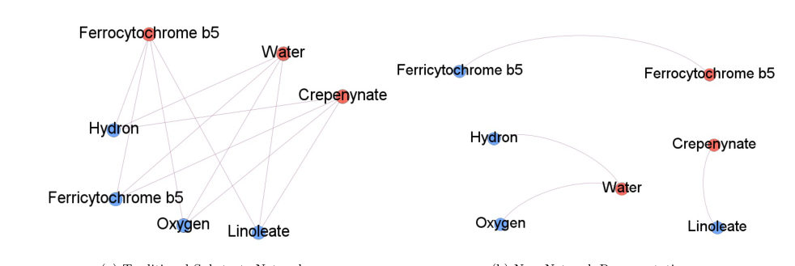
<figcaption class="paper-figure-caption"><b>Fig 1.</b> Figure 1: In a) and b) we have the visual representation of the links from reaction R05740 using our old method (a) and our new method (b). In a) we simply link each product in red to each substrate in blue, while in b) we link the molecules based on their chemical composition.</figcaption>
</figure>
<figure class="paper-figure-card">
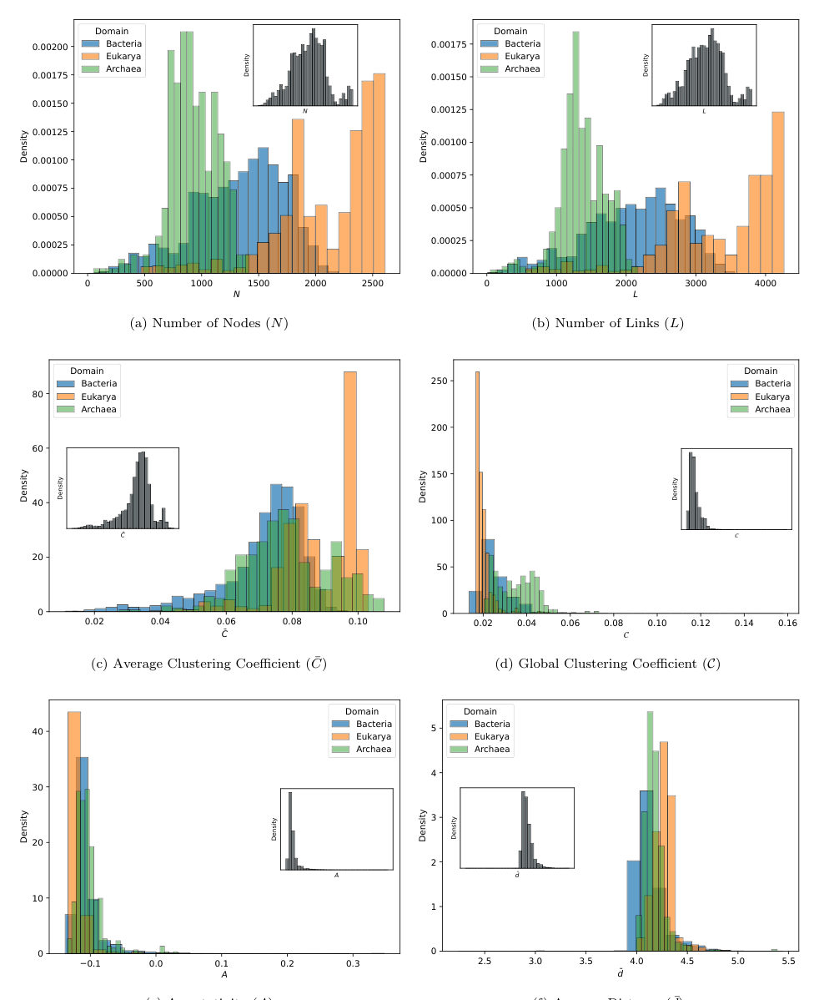
<figcaption class="paper-figure-caption"><b>Fig 2.</b> Figure 2: Histograms of parameter distributions in metabolic networks. In gray, we show the parameter distribution of the entire dataset, while in color, we show each Domain separately. For example, in (a), the right-hand peak in the number of nodes distribution (shown in gray) is composed mostly of eukaryotes (in orange). 8</figcaption>
</figure>
<figure class="paper-figure-card">
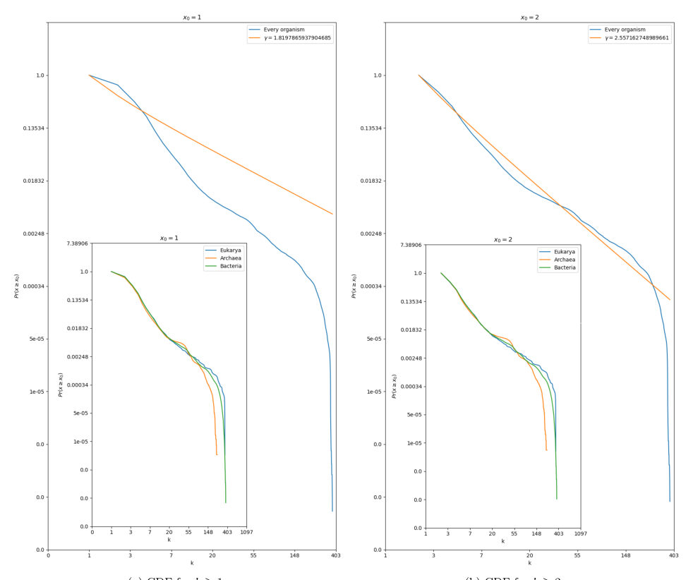
<figcaption class="paper-figure-caption"><b>Fig 3.</b> Figure 3: Cumulative distribution function (CDF) for every organism in logarithmic scale. The line represents the CDF of the fitted the power-law distribution for x0 = 1 (a) and x0 = 2 (b). In the insets, we display the CDF for each taxonomic domain. It is evident that all of them exhibit a similar behavior, and there appears to be a scarcity of high-degree nodes compared to the fitted power-law distribution.</figcaption>
</figure>
<figure class="paper-figure-card">
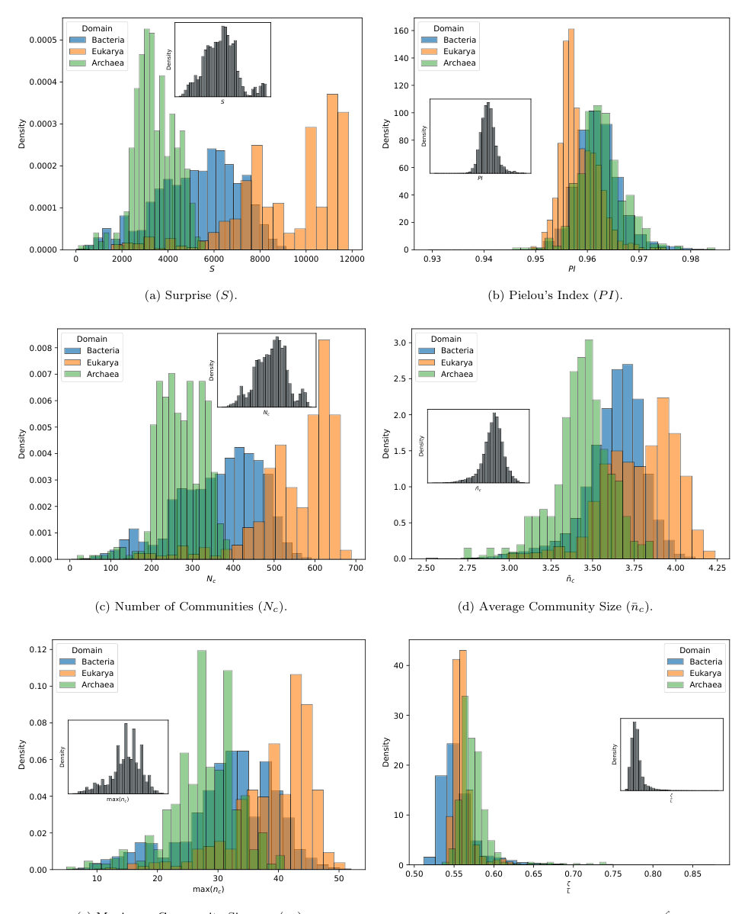
<figcaption class="paper-figure-caption"><b>Fig 4.</b> Figure 4: Histograms of the community structure distributions in metabolic networks. In gray, we show the parameter distribution of the entire dataset, while in color, we show each Domain separately. For instance, in d), we see a very even distribution in gray-scale, but, when we filter by domain we can see a separation between Archaea, Bacteria and Eukaryotes. 10</figcaption>
</figure>
<figure class="paper-figure-card">
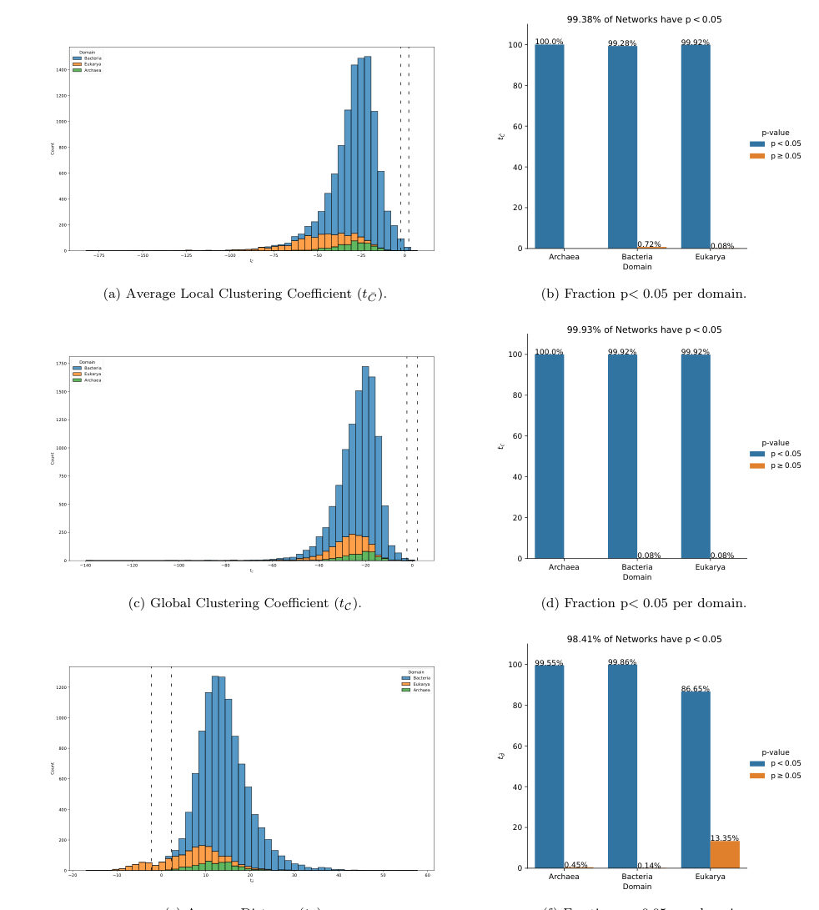
<figcaption class="paper-figure-caption"><b>Fig 5.</b> Figure 5: Histograms of tp for the topological properties of the metabolic networks. Here, we choose to stack the distributions for better visibility. In the right side we show the percentage of networks with p&lt; 0.05 per domain.</figcaption>
</figure>
</div>
<p><strong>Summary.</strong> This paper conducts a large-scale topological analysis of metabolic networks from diverse life forms. It introduces a refined method for building these networks based on direct chemical transformations and uses advanced community detection to quantify their structure. The findings reveal that the organization of these biological networks possesses specific topological signatures that cannot be explained by random chance, pointing to underlying evolutionary mechanisms.</p>
<p><strong>Why it may be interesting.</strong> While the subject is biochemistry, the rigorous application of graph theory, community detection (Surprise function), and statistical comparison against null models mirrors techniques used in analyzing complex systems in statistical physics.</p>
<details>
<summary>Detailed structure</summary>
<p><strong>Main problem.</strong> To comprehensively analyze the topological properties and community structure of metabolic networks across diverse life domains, identifying features driven by evolutionary pressures beyond simple degree distribution.</p>
<p><strong>Main result.</strong> Metabolic networks exhibit distinct topological signatures, such as being disassortative and having a higher local clustering coefficient compared to random models, suggesting underlying evolutionary constraints.</p>
<p><strong>Method.</strong> The study employs novel network construction methods focusing on direct chemical transformations and uses advanced community detection algorithms like Surprise to compare real networks against randomized null models.</p>
<p><strong>Model / system.</strong> The physical system is a metabolic network, modeled as a graph where nodes are metabolites and edges represent direct chemical transformations. The analysis spans 10912 organisms across Bacteria, Archaea, and Eukarya.</p>
<p><strong>Key observables.</strong> Community structure metrics (Surprise function, $N_c$, $ar{n}_c$, $PI$), topological properties ($ar{k}$, $ar{C}$, $C$, $A$, $ar{d}$), and comparisons against randomized network metrics.</p>
<p><strong>Important parameters / regimes.</strong> The analysis compares real vs. randomized networks using statistical tests (e.g., t-test) and focuses on identifying structural deviations from random expectations.</p>
<p><strong>Assumptions / limitations.</strong> The primary assumption is that topological features not explained by degree distribution reflect genuine, non-random evolutionary pressures. The method also assumes the ability to resolve currency metabolites based on elemental balance.</p>
<p><strong>Figures summary.</strong> The paper compares traditional vs. novel network constructions (Fig 1), presents statistical summaries of topological properties (Table 2), details community structure analysis (Table 5), and compares these findings against randomized network models (Tables 6 and 7).</p>
<p><strong>Paper structure.</strong> The paper progresses from introducing the problem and novel network construction (focusing on chemical pathways) to detailing the statistical analysis of global and community metrics, culminating in a rigorous comparison between real biological networks and randomized null models.</p>
</details>
<details>
<summary>Abstract</summary>
<p>Metabolic networks play pivotal roles in understanding the evolution of organisms, microbiome dynamics and disease prevention and treatment. This study presents a comprehensive analysis of metabolic network properties across 10912 organisms spanning Bacteria, Archaea, and Eukarya domains. A novel method for the network construction is introduced, emphasizing the chemical transformations of metabolites. Unlike conventional approaches that link every substrate to every product in all chemical reactions, this method aligns more closely with metabolic pathways, linking products only to their generating substrates. Emphasis is placed on investigating the community structure within metabolic networks, employing the Surprise quality function that better addresses some limitations of previous approaches. Through comparisons between real and randomized versions of the networks, we identify characteristics that cannot be explained solely by the network degree distribution, thus identifying topological properties and community structures that arise from additional evolutionary pressures. This highlights the need for evolutionary models to incorporate additional mechanisms beyond the replication of the degree distribution.</p>
</details>
<p><sub><a href="#top">↑ back to top</a></sub></p>

<p><a id="paper-2608.20660"></a></p>
<h3 id="predicting-resource-efficient-hamiltonian-decomposition-for-continuous-time-quantum-walk-simulations"><a href="http://arxiv.org/abs/2608.20660v1">Predicting Resource Efficient Hamiltonian Decomposition for Continuous-Time Quantum Walk Simulations</a></h3>
<p><strong>Authors:</strong> Mostafa Atallah, Rebekah Herrman, Zain H. Saleem<br>
<strong>Type:</strong> both · <strong>Category:</strong> quantum information and computing · <strong>PDF:</strong> <a href="https://arxiv.org/pdf/2608.20660v1">https://arxiv.org/pdf/2608.20660v1</a><br>
<strong>Analysis basis:</strong> full PDF text, analyzed in chunks</p>
<div class="figure-strip-hint">↔ Scroll figures horizontally</div>
<div class="paper-figures-scroll">
<figure class="paper-figure-card">
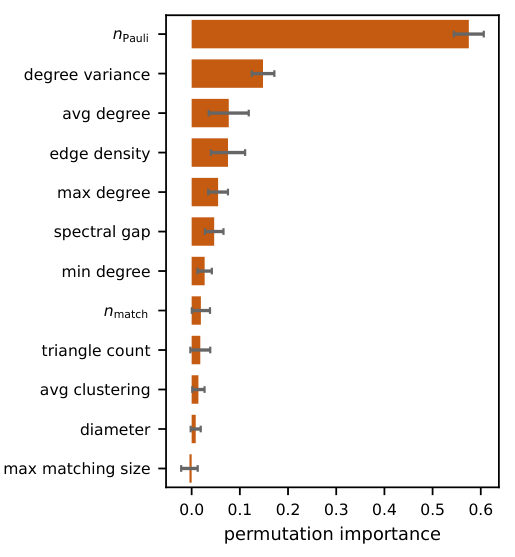
<figcaption class="paper-figure-caption"><b>Fig 1.</b> Fig. 1: Permutation feature importance on the training popu- lation, measured as the mean drop in predictive performance when each feature is shuffled (five seeds).</figcaption>
</figure>
<figure class="paper-figure-card">
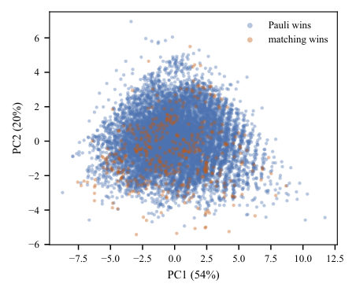
<figcaption class="paper-figure-caption"><b>Fig 2.</b> Fig. 2: First two principal components of the twelve stan- dardized features on the McKay population, with each graph colored by class. The matching-wins overlap the Pauli-wins rather than separating from them, so the two classes are not separated in these two principal directions.</figcaption>
</figure>
<figure class="paper-figure-card">
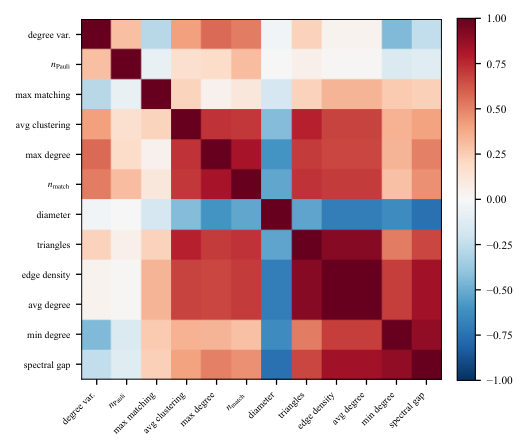
<figcaption class="paper-figure-caption"><b>Fig 3.</b> Fig. 3: Pairwise Pearson correlation between the twelve fea- tures on the McKay population, with features ordered by hier- archical clustering so that correlated groups appear adjacent.</figcaption>
</figure>
<figure class="paper-figure-card">
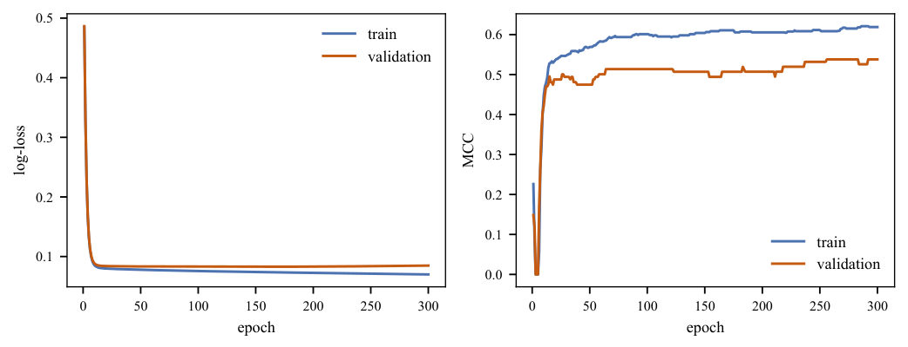
<figcaption class="paper-figure-caption"><b>Fig 4.</b> Fig. 4: Training and validation convergence of the tuned ANN on the McKay split (seed 0): log-loss (left) and MCC (right) versus epoch. Train and validation track together, indicating the single 32-unit layer generalizes rather than memorizes.</figcaption>
</figure>
<figure class="paper-figure-card">
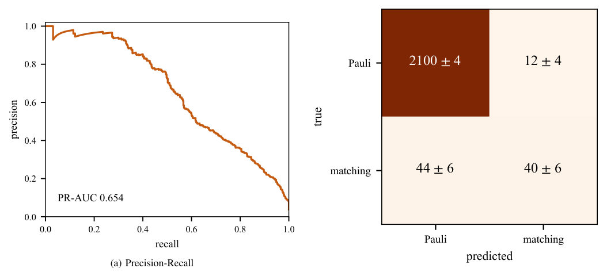
<figcaption class="paper-figure-caption"><b>Fig 5.</b> Fig. 5: Tuned ANN evaluated on the held-out McKay test graphs, averaged over five random splits. In (a), PR-AUC is the area under the precision-recall curve. A value close to zero indicates a model does no better than random guessing. In (b), each cell counts the test graphs of a given true class (rows) assigned to a given predicted class (columns), with the diagonal holding the correct predictions.</figcaption>
</figure>
</div>
<p><strong>Summary.</strong> This research tackles the challenge of efficiently simulating Continuous-Time Quantum Walks by comparing two ways to decompose the system's Hamiltonian. By training machine learning models on graph properties, the authors developed a predictor that can advise quantum compilers on which decomposition minimizes costly CX gates. This offers a practical tool for optimizing quantum circuit compilation for quantum simulation.</p>
<p><strong>Why it may be interesting.</strong> This work directly addresses the resource optimization bottleneck in simulating quantum dynamics on near-term quantum hardware by providing a data-driven tool to select the best circuit decomposition.</p>
<details>
<summary>Detailed structure</summary>
<p><strong>Main problem.</strong> The paper aims to predict which of two Hamiltonian decompositions (Pauli vs. matching) will result in fewer CX gates when simulating a Continuous-Time Quantum Walk (CTQW) via Trotterization.</p>
<p><strong>Main result.</strong> The choice of the resource-efficient decomposition is primarily governed by the decomposition property $n_{	ext{Pauli}}$, rather than intrinsic graph topology. The trained ML model shows strong transferability, achieving high performance on larger, unseen graphs.</p>
<p><strong>Method.</strong> A supervised machine learning approach is used to classify the optimal decomposition by training models on a large set of graphs, using graph topology and decomposition term counts as features.</p>
<p><strong>Model / system.</strong> The system is a CTQW evolving on a graph $G$, whose time evolution $e^{-iHt}$ must be approximated using Trotterization. The comparison is between the Pauli and matching decompositions of the Hamiltonian $H$.</p>
<p><strong>Key observables.</strong> The number of CX (two-qubit) gates required by each decomposition, and the classification accuracy (MCC) of the prediction model.</p>
<p><strong>Important parameters / regimes.</strong> The number of vertices ($N$), the graph structure (e.g., 8-vertex graphs, Erdos-Renyi), and the feature counts ($n_{	ext{Pauli}}$, $n_{	ext{match}}$).</p>
<p><strong>Assumptions / limitations.</strong> The simulation relies on Trotterization, and the selection criterion is solely based on minimizing the CX gate count, ignoring circuit depth or connectivity.</p>
<p><strong>Figures summary.</strong> The notes mention tables comparing performance metrics (precision, recall, MCC) across various ML models, feature subsets, and increasing graph sizes ($N=8$ to $N=256$).</p>
<p><strong>Paper structure.</strong> The paper establishes the problem (Hamiltonian decomposition for CTQW), develops the methodology (feature engineering using graph and decomposition properties), trains ML models on a known population, and validates the model's predictive power on larger, held-out test sets.</p>
</details>
<details>
<summary>Abstract</summary>
<p>Simulating a continuous-time quantum walk (CTQW) on a graph in the circuit model of quantum computing requires decomposing its Hamiltonian into terms that can be Trotterized into hardware-native gates. We consider two such decompositions: the standard Pauli decomposition and the recently introduced matching decomposition. Prior work suggests that the matching decomposition uses fewer CX gates on sparse graphs, while the Pauli decomposition uses fewer on denser graphs. Since CX gates dominate error and runtime on current hardware, we train machine learning models to predict, for a given graph, which of the two decompositions produces the smaller CX gate count. We train and evaluate on the complete population of all 11,117 connected eight-vertex graphs from Brendan McKay's database, so the class balance and overlap are measured directly rather than estimated. We use twelve features: ten topological properties of the graph and two that count the terms the Pauli and matching decompositions produce (n_Pauli and n_match), both computable without transpiling the simulation circuit. Standard topological properties alone provide little predictive power. Instead, the dominant signal comes from n_Pauli, a property of the Hamiltonian decomposition rather than an intrinsic property of the graph; degree variance is the only other feature that carries signal. Across a range of models the Matthews correlation coefficient (MCC) falls in a narrow band, from 0.569 untuned to 0.593 after tuning, so no single architecture stands out. We adopt a single-hidden-layer neural network at MCC 0.593. Applied frozen to a held-out, class-balanced test set of larger graphs (up to 256 vertices) from structured and Erdos-Renyi families, the model transfers, with MCC rising from 0.785 at N=8 to 1 at N&gt;=64.</p>
</details>
<p><sub><a href="#top">↑ back to top</a></sub></p>

<p><a id="paper-2608.21105"></a></p>
<h3 id="quantifying-entangling-power-of-controlled-unitary-gates"><a href="http://arxiv.org/abs/2608.21105v1">Quantifying Entangling Power of Controlled Unitary Gates</a></h3>
<p><strong>Authors:</strong> Ankur Haldar, Pankaj Agrawal, Prasenjit Deb<br>
<strong>Type:</strong> theory · <strong>Category:</strong> quantum information and computing · <strong>PDF:</strong> <a href="https://arxiv.org/pdf/2608.21105v1">https://arxiv.org/pdf/2608.21105v1</a><br>
<strong>Analysis basis:</strong> full PDF text, analyzed in chunks</p>
<div class="figure-strip-hint">↔ Scroll figures horizontally</div>
<div class="paper-figures-scroll">
<figure class="paper-figure-card">
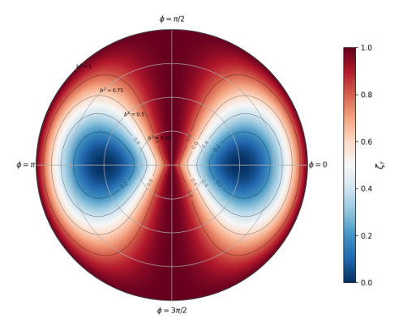
<figcaption class="paper-figure-caption"><b>Fig 1.</b> FIG. 1: ζr(b2, ϕ) for the Toffoli gate, Eq. (29), at fixed p11 = 1/2, plotted in polar coordinates with radius b2</figcaption>
</figure>
<figure class="paper-figure-card">
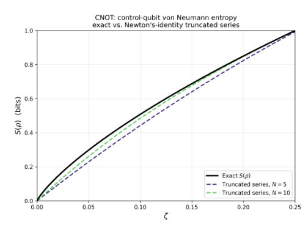
<figcaption class="paper-figure-caption"><b>Fig 2.</b> FIG. 2: von Neumann entropy of the control-qubit re- duced state for a CNOT gate, as a function of ζ. The exact entropy (solid black) is compared against the trun- cated series of Eq. (42), evaluated via the Newton’s- identity recursion of Eq. (40), at truncation orders N = 5 and N = 10 (dashed). Entropy is reported in bits, so the physical range is S ∈[0, 1] over ζ ∈[0, 1/4].</figcaption>
</figure>
</div>
<p><strong>Summary.</strong> This paper introduces a novel, computable quantity, $\zeta$, to quantify the entanglement generated by controlled unitary gates in quantum computation. It establishes theoretical upper bounds for this entangling power, showing that the controlled unitary architecture can achieve optimal entanglement for specific dimension pairings. This provides a powerful, state-independent tool for analyzing quantum circuit performance.</p>
<p><strong>Why it may be interesting.</strong> The development of a simple, computable metric ($\zeta$) that bypasses full state simulation is highly valuable for analyzing complex quantum circuits, providing theoretical benchmarks for quantum hardware performance.</p>
<details>
<summary>Detailed structure</summary>
<p><strong>Main problem.</strong> The paper aims to develop a computable quantity to quantify the entangling power generated by controlled unitary gates, avoiding the need to simulate the full output state.</p>
<p><strong>Main result.</strong> A new computable quantity, $\zeta$, is introduced, which successfully quantifies entanglement and establishes a universal upper bound $\zeta_{	ext{max}} = (2d-1)/(2d+1)$ for the generalized controlled unitary architecture.</p>
<p><strong>Method.</strong> The authors derive $\zeta$ using properties of reduced density matrices and trace overlaps, relating it to established measures like purity and linear entropy.</p>
<p><strong>Model / system.</strong> The study focuses on two-qubit and multi-qubit systems governed by Controlled Unitary (CU) and Generalized Controlled Unitary (GCU) gates acting on bipartite control and target registers.</p>
<p><strong>Key observables.</strong> The primary observable is $\zeta$, the computable entangling power. Other key diagnostics include purity ($\gamma$), normalized linear entropy ($\zeta_r$), and von Neumann entropy ($S(
ho)$).</p>
<p><strong>Important parameters / regimes.</strong> The dimension of the control ($m$) and target ($n$) registers, and the probability distribution $\{p_i\}$ over the control basis states.</p>
<p><strong>Assumptions / limitations.</strong> The analysis assumes ideal quantum operations and derives bounds based on specific controlled unitary architectures, noting limitations when extending to arbitrary dimensions.</p>
<p><strong>Figures summary.</strong> Figures illustrate the entanglement ratio $\zeta_r$ for the Toffoli gate, showing regions of separability and maximal entanglement, and compare theoretical entropy calculations against series approximations.</p>
<p><strong>Paper structure.</strong> The paper progresses by first defining $\zeta$ for two-qubit gates, then generalizing it to GCU gates, deriving the universal upper bound $\zeta_{	ext{max}}$, and finally establishing functional relations between $\zeta$ and other entropy measures.</p>
</details>
<details>
<summary>Abstract</summary>
<p>Applying controlled unitary gates to generate entanglement between qubits is a routine task in both quantum communication and computation. The existing tools for predicting how much entanglement a given gate can generate require either simulation of the entangling circuit or averaging over a distribution of inputs for a given controlled unitary gate. Here, we introduce a computable quantity $ζ$ that not only determines whether a controlled unitary gate generates entanglement, but also quantifies the entanglement for any specific input without requiring the construction of the output state. For two-qubit controlled unitary gates, we establish the physical conditions corresponding to the extremum values of the proposed quantity. Extending the dimension of control and target registers to arbitrary size through a generalized controlled unitary architecture, we derive a universal upper bound on $ζ$ and identify the conditions for its saturation. Later we establish functional relation between the quantity and other known quantities, such as purity, normalized linear entropy, and von Neumann entropy. Finally, we compare our results with previous research work and show that the quantity proposed in this work achieves the previously known optimal values of entangling power of controlled unitary gates for some specific dimensions of target and control registers.</p>
</details>
<p><sub><a href="#top">↑ back to top</a></sub></p>

<p><a id="paper-2608.20603"></a></p>
<h3 id="scaling-behavior-of-parameterized-quantum-circuits-from-a-lie-algebraic-perspective"><a href="http://arxiv.org/abs/2608.20603v1">Scaling Behavior of Parameterized Quantum Circuits from a Lie-Algebraic Perspective</a></h3>
<p><strong>Authors:</strong> Hiroshi Ohno<br>
<strong>Type:</strong> theory · <strong>Category:</strong> quantum information and computing · <strong>PDF:</strong> <a href="https://arxiv.org/pdf/2608.20603v1">https://arxiv.org/pdf/2608.20603v1</a><br>
<strong>Analysis basis:</strong> full PDF text, analyzed in chunks</p>
<div class="figure-strip-hint">↔ Scroll figures horizontally</div>
<div class="paper-figures-scroll">
<figure class="paper-figure-card">
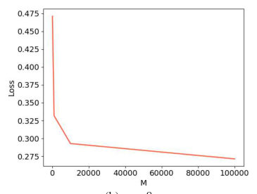
<figcaption class="paper-figure-caption"><b>Fig 1.</b> Figure 1: Loss curves of sample size M. Mean and standard deviation (error bars) of loss are shown.</figcaption>
</figure>
<figure class="paper-figure-card">
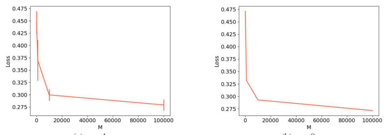
<figcaption class="paper-figure-caption"><b>Fig 2.</b> Figure 3 shows the average values of DLA, OOD, and De f f with respect to the parameter size P. Figure 4 shows the log-log plots between loss and DLA, OOD, and De f f . DLA and OOD saturated at 255 and 128 for P = 16, 32,</figcaption>
</figure>
<figure class="paper-figure-card">
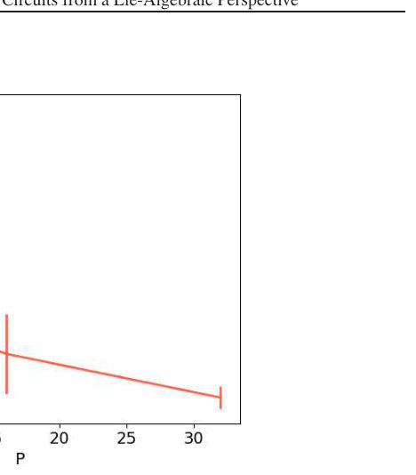
<figcaption class="paper-figure-caption"><b>Fig 3.</b> Figure 2: Loss curves of parameter size P. Mean and standard deviation (error bars) of loss are shown.</figcaption>
</figure>
<figure class="paper-figure-card">
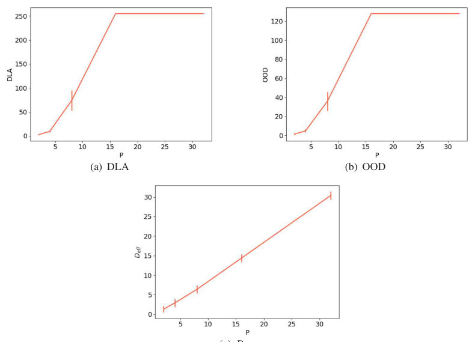
<figcaption class="paper-figure-caption"><b>Fig 4.</b> Figure 3: Results of dimension of DLA, OOD, and De f f with respect to parameter size P. Mean and standard deviation (error bars) are shown.</figcaption>
</figure>
<figure class="paper-figure-card">
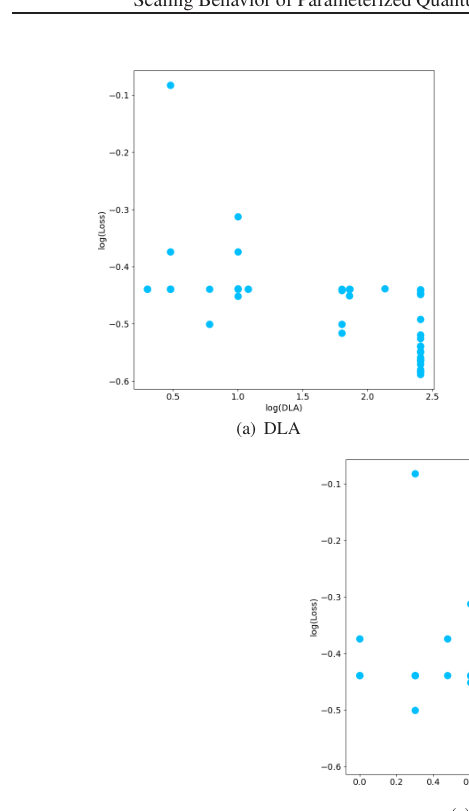
<figcaption class="paper-figure-caption"><b>Fig 5.</b> Figure 4: Log-log plots between loss and DLA, OOD, and De f f</figcaption>
</figure>
</div>
<p><strong>Summary.</strong> This paper analyzes how the performance of parameterized quantum circuits scales by comparing several metrics of model size. The authors find that while simple counts like parameter number ($P$) or Lie algebra dimensions ($    ext{DLA}$, $    ext{OOD}$) are insufficient, the Jacobian effective dimension ($ ext{Deff}$) provides a robust, geometry-aware measure of the circuit's accessible degrees of freedom. This suggests $   ext{Deff}$ should be used instead of $P$ when characterizing model capacity.</p>
<p><strong>Why it may be interesting.</strong> It provides a rigorous, mathematically grounded metric ($    ext{Deff}$) to quantify the true complexity or capacity of variational quantum circuits, which is crucial for designing scalable quantum machine learning algorithms.</p>
<details>
<summary>Detailed structure</summary>
<p><strong>Main problem.</strong> The study aims to characterize how the performance (loss) of parameterized quantum circuits scales with available resources, such as data size, model size, and computational effort.</p>
<p><strong>Main result.</strong> The Jacobian effective dimension ($    ext{Deff}$) was shown to be a geometry-aware measure that scales comparably to the nominal parameter size ($P$) and is superior to other Lie-algebraic measures ($    ext{DLA}$, $    ext{OOD}$) which rapidly saturate.</p>
<p><strong>Method.</strong> The authors numerically investigated scaling laws by training the circuits on a linear regression task using Root Mean Square Error (RMSE) minimization via SPSA.</p>
<p><strong>Model / system.</strong> The model is a parameterized quantum circuit (PQC) defined by a unitary $U(	heta) = \prod e^{-i	heta_j G_j}$, where generators $G_j$ are sampled from Pauli strings.</p>
<p><strong>Key observables.</strong> Loss (RMSE), Dimension of dynamical Lie algebra ($ ext{DLA}$), Observable orbit dimension ($ ext{OOD}$), and Jacobian effective dimension ($ ext{Deff}$).</p>
<p><strong>Important parameters / regimes.</strong> Training sample size ($M$), parameter size ($P$), and number of optimization iterations ($T$).</p>
<p><strong>Assumptions / limitations.</strong> The analysis is restricted to a regression task and small qubit numbers (four and eight), and the scaling laws are observed over finite ranges.</p>
<p><strong>Figures summary.</strong> Figures illustrate the decrease in loss with increasing $M$, $P$, and $T$. Figure 3 compares $ ext{DLA}$, $    ext{OOD}$, and $    ext{Deff}$ vs. $P$, showing saturation for the first two and strong correlation for $   ext{Deff}$.</p>
<p><strong>Paper structure.</strong> The paper establishes the need to measure resource scaling, analyzes data/model/compute scaling using various metrics ($   ext{DLA}$, $    ext{OOD}$, $    ext{Deff}$), presents results showing $ ext{Deff}$'s superior scaling behavior, and concludes by proposing $    ext{Deff}$ as a robust geometric measure.</p>
</details>
<details>
<summary>Abstract</summary>
<p>Understanding how the performance of parameterized quantum circuits scales with available resources is important for characterizing their trainability and effective model capacity. In this study, we numerically investigate data scaling, model scaling, and compute scaling in parameterized quantum circuits and examine Lie-algebraic quantities as alternative measures of model size. In addition to the number of circuit parameters, we consider the dimension of the dynamical Lie algebra, the observable-orbit dimension, and a Jacobian effective dimension defined as the rank of the Jacobian of the parameterized observable orbit. Using a regression task with randomly generated Pauli-string generators, we observe decreasing loss with increasing training dataset size, parameter size, and number of optimization iterations over the ranges investigated. For model scaling, the dynamical Lie algebra and observable orbit dimensions rapidly saturate as the parameter size increases, whereas the Jacobian effective dimension remains strongly correlated with the parameter size and exhibits comparable scaling behavior. These results suggest that the Jacobian effective dimension provides a geometry-aware measure of the locally accessible observable degrees of freedom of finite-depth parameterized quantum circuits and may serve as a useful scaling parameter beyond the nominal parameter size.</p>
</details>
<p><sub><a href="#top">↑ back to top</a></sub></p>

<p><a id="paper-2608.20954"></a></p>
<h3 id="tools-for-reducing-service-time-in-near-term-quantum-networks"><a href="http://arxiv.org/abs/2608.20954v1">Tools for Reducing Service Time in Near-Term Quantum Networks</a></h3>
<p><strong>Authors:</strong> Jake Smith, Thomas R. Beauchamp, Scarlett Gauthier, Oumayma Bouchmal, Stephanie Wehner<br>
<strong>Type:</strong> theory · <strong>Category:</strong> quantum information and computing · <strong>PDF:</strong> <a href="https://arxiv.org/pdf/2608.20954v1">https://arxiv.org/pdf/2608.20954v1</a><br>
<strong>Analysis basis:</strong> full PDF text, analyzed in chunks</p>
<div class="figure-strip-hint">↔ Scroll figures horizontally</div>
<div class="paper-figures-scroll">
<figure class="paper-figure-card">
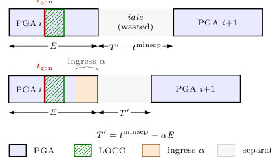
<figcaption class="paper-figure-caption"><b>Fig 1.</b> Fig. 1. The ingress α is the fraction of PGA i by which the scheduled separation is shortened, giving T ′ = tminsep −αE. At α = 0 (top) the full minimum separation is kept and the network idles after an early tgen. At α &gt; 0 (bottom) the separation shortens by αE, reclaiming idle time. A packet generated within the shaded ingress region risks a minimum separation violation (Section IV-B).</figcaption>
</figure>
<figure class="paper-figure-card">
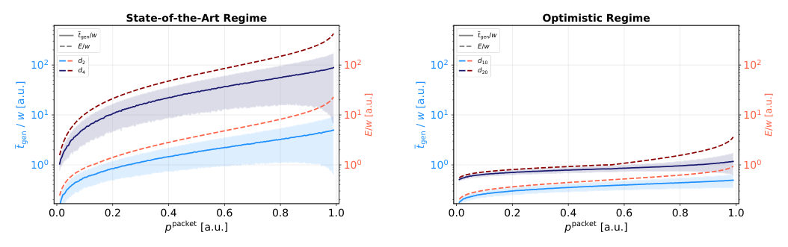
<figcaption class="paper-figure-caption"><b>Fig 2.</b> Fig. 2. Average packet generation time (solid, left axis) and PGA duration (dashed, right axis) as a function of packet generation probability ppacket for the state-of-the-art regime (left; λ = 2.22 Hz, w = 275 ms) and optimistic regime (right; λ = 10 Hz, w = 2 s). Both quantities are normalized by the window length w to enable comparison across demands with different PGA durations. Demands are labeled by their requested link count s, with z-scores z = (s −λw)/ √</figcaption>
</figure>
<figure class="paper-figure-card">
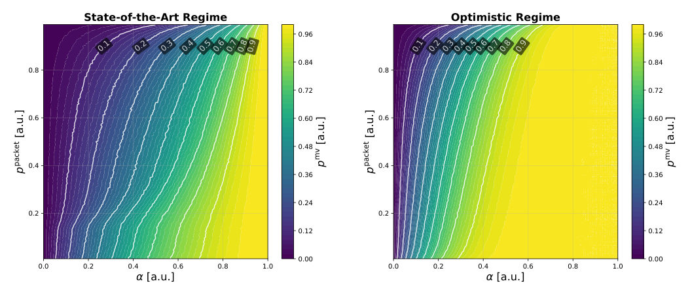
<figcaption class="paper-figure-caption"><b>Fig 3.</b> Fig. 3. Probability pmv of a minimum separation violation, conditioned on successful packet generation. The surfaces are shown as a function of PGA ingress α and packet generation probability ppacket. Two configurations are compared: requested links s = 2 in the state-of-the-art regime (left; λ = 2.22 Hz, w = 275 ms, z = 1.8) and s = 10 in the optimistic regime (right; λ = 10 Hz, w = 2 s, z = −2.2). Each grid point is estimated from 104 successful trials obtained by rejection sampling. White contours are spaced at intervals of 0.1. These surfaces are computed once per physical configuration (λ, w, s) and stored as lookup tables for use by the Markov chain session model.</figcaption>
</figure>
</div>
<p><strong>Summary.</strong> This work introduces a novel method to optimize resource utilization in near-term quantum networks by intelligently shortening the mandatory idle time scheduled between entanglement generation attempts. By analytically modeling the scheduling process, the authors demonstrate significant reductions in total service time, especially when multiple applications share the quantum hardware. This is crucial for making quantum network services more efficient and practical.</p>
<p><strong>Why it may be interesting.</strong> It provides a concrete, resource-management optimization technique applicable to the scheduling overhead inherent in building and operating quantum communication infrastructure.</p>
<details>
<summary>Detailed structure</summary>
<p><strong>Main problem.</strong> The paper addresses the inefficiency in near-term quantum networks caused by mandatory idle time scheduled between entanglement generation attempts.</p>
<p><strong>Main result.</strong> The proposed optimization method can reduce the total network service time by up to 30% when multiple applications are co-scheduled.</p>
<p><strong>Method.</strong> It uses an analytical execution model, treating the scheduling problem as an optimization to shorten the scheduled separation time while maintaining required service probabilities.</p>
<p><strong>Model / system.</strong> The system is a multi-user quantum network utilizing the Arqon architecture, which generates shared entanglement for quantum information applications.</p>
<p><strong>Key observables.</strong> Network service time reduction (up to 30% for co-scheduled apps), session execution speedup, and the optimized scheduled separation time.</p>
<p><strong>Important parameters / regimes.</strong> Minimum separation time ($t_{minsep}$), service probability, and the degree of co-scheduling.</p>
<p><strong>Assumptions / limitations.</strong> The optimization assumes a balance between minimizing time and ensuring the target number of instances is completed with a specified service probability.</p>
<p><strong>Figures summary.</strong> Figure 1 illustrates the comparison between full minimum separation and reduced separation in the scheduling process.</p>
<p><strong>Paper structure.</strong> The paper identifies the scheduling limitation, proposes the analytical optimization method, applies it to the Arqon architecture, and presents quantitative results comparing reduced vs. baseline service times.</p>
</details>
<details>
<summary>Abstract</summary>
<p>Architectures have been proposed to control entanglement generation in multi-user quantum networks. To allow time for local operations and classical communication at end nodes, these architectures insert fixed separations between consecutive batches of entanglement generation attempts. This reduces network utilization when attempts fail, leaving the network idle during the scheduled separation. To address this limitation, we propose a novel method to reclaim this idle time by shortening the scheduled separation between attempts while respecting hardware constraints. The method uses an analytical execution model to optimize the separation and reduce the total network service time of an application. Evaluations within the Arqon architecture show network service time reductions of up to 42 minutes (7.6%) for single applications and 16-29 minutes (26-30%) per application when co-scheduled. The approach applies broadly to quantum network architectures that share hardware between entanglement generation and local operations, and the method can be used online by network schedulers.</p>
</details>
<p><sub><a href="#top">↑ back to top</a></sub></p>
</details>
<h2 id="secondary-cond-mat-archives">Secondary cond-mat archives</h2>
<p><em>Papers from cond-mat.mtrl-sci, mes-hall, other, soft, supr-con. These archives are de-prioritized — they appear at the end regardless of relevance score.</em></p>
<h3 id="relevant-in-secondary-archives-21">Relevant in secondary archives (21)</h3>

<p><a id="paper-2608.20792"></a></p>
<h3 id="phase-control-of-magnon-phonon-coupling-via-magnetic-field"><a href="http://arxiv.org/abs/2608.20792v1">Phase control of magnon-phonon coupling via magnetic field</a></h3>
<p><strong>Authors:</strong> Yasuhiro Todaka, Motoki Asano, Isamu Yasuda, Masashi Kawaguchi, Daiki Hatanaka, Masamitsu Hayashi<br>
<strong>Type:</strong> both · <strong>Category:</strong> other · <strong>PDF:</strong> <a href="https://arxiv.org/pdf/2608.20792v1">https://arxiv.org/pdf/2608.20792v1</a><br>
<strong>Analysis basis:</strong> full PDF text, analyzed in chunks
<strong>Topic relevance:</strong> <code>correlated / nonlocal dissipation</code> <strong>3/5</strong> · <code>driven-dissipative phase transition</code> <strong>3/5</strong> · <code>Keldysh / 2PI / non-Gaussian methods</code> <strong>2/5</strong> · <code>methods for driven-dissipative</code> <strong>2/5</strong> · <code>non-equilibrium universality</code> <strong>2/5</strong> · <code>analog quantum simulation</code> <strong>1/5</strong> · <code>interference shaping light</code> <strong>1/5</strong> · <code>quantum measurements</code> <strong>1/5</strong></p>
<div class="figure-strip-hint">↔ Scroll figures horizontally</div>
<div class="paper-figures-scroll">
<figure class="paper-figure-card">
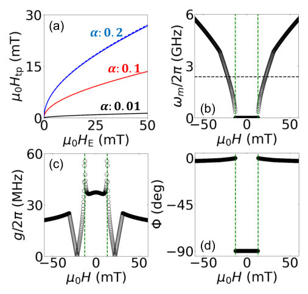
<figcaption class="paper-figure-caption"><b>Fig 1.</b> FIG. 1. (a) µ0Htp [Eq. (7)] plotted against the inter- layer exchange coupling field µ0HE. Solid and dashed lines show results from numerical calculations and Eq. (7), respec- tively. The magnetic damping constant α is varied: results are shown by different colors. (b)-(d) Magnetic field µ0H (φH = 135 deg) dependence of the acoustic magnon eigenfre- quency ωm/2π (b), magnitude g (c) and phase Φ (d) of the magnon-phonon coupling constant. The vertical dashed line indicates |H| = Htp. The horizontal dashed line in (b) shows the SAW resonance frequency used in the experiments. Pa- rameters used in the calculations are listed in Table I of the Appendix. Here the uniaxial magnetic anisotropy...</figcaption>
</figure>
<figure class="paper-figure-card">
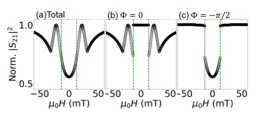
<figcaption class="paper-figure-caption"><b>Fig 2.</b> FIG. 2. (a)-(c) Normalized SAW transmittance |S21|2 vs in- plane magnetic field µ0H (φH = 135 deg). |S21|2 is calculated assuming Φ = 0 (b) and Φ = −π/2 (c). The sum of the two is presented in (a). Parameters used in the calculations are listed in Table I of the Appendix. Here the uniaxial magnetic anisotropy field µ0Hu and the dipolar interaction field µ0HD are set to zero.</figcaption>
</figure>
<figure class="paper-figure-card">
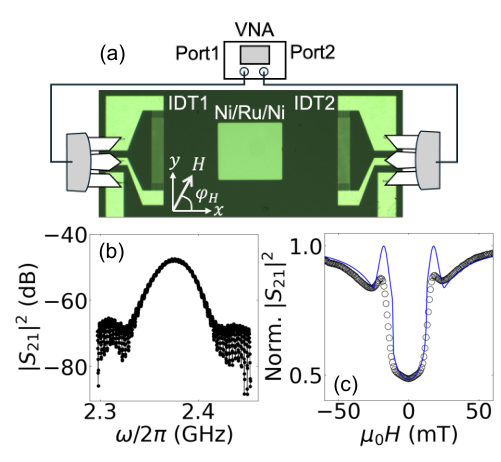
<figcaption class="paper-figure-caption"><b>Fig 3.</b> FIG. 3. (a) Schematic illustration of the device used to study the SAW transmission across the Ni/Ru/Ni SAF. (b) SAW transmittance |S21|2 plotted against the SAW excitation fre- quency ω/2π. (c) Dependence of the normalized |S21|2 on the magnetic field µ0H (φH = 135 deg). Black circles are the experimental results, the blue line shows the fitting result. Parameters used in the calculations are listed in Table I of the Appendix.</figcaption>
</figure>
<figure class="paper-figure-card">
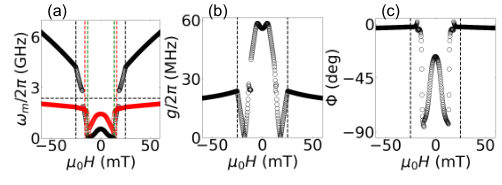
<figcaption class="paper-figure-caption"><b>Fig 4.</b> FIG. 4. (a)-(c) Magnetic field µ0H dependence of the acous- tic magnon eigenfrequency ωm/2π (black circles) and the re- laxation rate (κm/2)/2π (red circles) (a), the magnitude g (b) and the phase Φ (c) of the magnon-phonon coupling con- stant. The vertical red and green dashed lines in (a) indicate the boundary between the overdamped and underdamped regimes, and |H| = Htp, respectively. The horizontal dashed line in (a) shows the SAW resonance frequency used in the experiments. The vertical black dashed lines in (a-c) indi- cate µ0H = ±25 mT. Parameters used in the calculations are listed in Table I. Here the uniaxial magnetic anisotropy field µ0Hu and the dipolar interaction field µ0HD...</figcaption>
</figure>
<figure class="paper-figure-card">
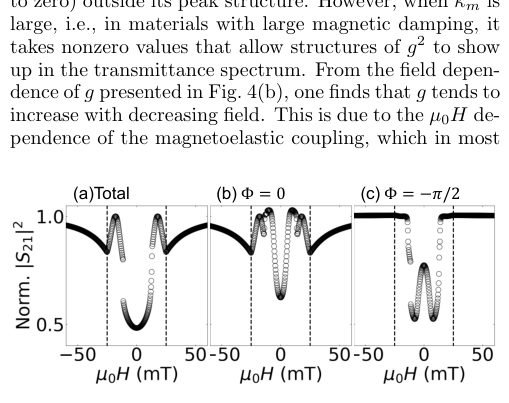
<figcaption class="paper-figure-caption"><b>Fig 5.</b> FIG. 5. (a)-(c) Normalized SAW transmittance |S21|2 vs in- plane magnetic field µ0H. |S21|2 is calculated assuming Φ = 0 (b) and Φ = −π/2 (c). The sum of the two is presented in (a). The vertical dashed lines indicate µ0H = ±25 mT. Parameters used in the calculations are listed in Table I. Here the uniaxial magnetic anisotropy field µ0Hu and the dipolar interaction field µ0HD are included.</figcaption>
</figure>
</div>

<p><strong>Summary.</strong> This work demonstrates phase control over magnon-phonon coupling in magnetic thin films by varying an external magnetic field. By tuning the coupling constant's phase from real to complex, the system can couple to overdamped magnons. This mechanism is experimentally observable as a distinct minimum in the SAW transmission spectrum near zero magnetic field.</p>
<p><strong>Why it may be interesting.</strong> The ability to tune the coupling phase via magnetic field provides a clean platform to explore non-Hermitian physics and dissipative coupling mechanisms in solid-state magnonics, relevant to open quantum systems.</p>
<details>
<summary>Detailed structure</summary>
<p><strong>Main problem.</strong> The study investigates how the phase of the magnon-phonon coupling constant can be controlled by tuning an external magnetic field in magnetic thin films.</p>
<p><strong>Main result.</strong> The phase control allows for coupling to overdamped magnons via an imaginary coupling component ($\Phi = -\pi/2$), which manifests as a pronounced minimum in the SAW transmittance spectrum near zero magnetic field.</p>
<p><strong>Method.</strong> The research combines theoretical modeling using coupled equations of motion (LLG and elastic wave equations) with analysis of measurable quantities like SAW transmittance.</p>
<p><strong>Model / system.</strong> The system is a magnetic thin film, specifically a Ni/Ru/Ni synthetic antiferromagnet, where magnons interact with surface acoustic waves (SAW) phonons.</p>
<p><strong>Key observables.</strong> SAW transmittance ($\lvert S_{21} 
vert^2$), the phase ($\Phi$) of the coupling constant, and the magnon eigenfrequency ($\omega_m$).</p>
<p><strong>Important parameters / regimes.</strong> External magnetic field ($\mu_0H$), magnetic damping ($\alpha$), and the transition field ($H_{tp}$).</p>
<p><strong>Assumptions / limitations.</strong> Initial analyses neglect magnetic anisotropy and magnetic dipole interactions, though later work incorporates these effects.</p>
<p><strong>Figures summary.</strong> Figures show the dependence of SAW transmittance on magnetic field, illustrating dips associated with both $\Phi=0$ and $\Phi=-\pi/2$ coupling regimes.</p>
<p><strong>Paper structure.</strong> The paper develops the coupled equations of motion, analyzes the complex nature of the coupling constant, and then calculates the resulting SAW transmittance spectrum under varying magnetic field conditions.</p>
</details>
<details>
<summary>Abstract</summary>
<p>We study the phase of the coupling between magnons and surface acoustic wave (SAW) phonons in magnetic thin films. The coupling constant changes from a real to a complex number as the external magnetic field is reduced. Below a transition field, the imaginary coupling constant allows SAW phonons to couple to overdamped magnons whose resonance frequency is close to zero and far from the SAW resonance. The strength of the imaginary coupling constant and the magnitude of the transition field both scale with magnetic damping. We find the coupling produces a broad, pronounced minimum in the SAW transmittance spectrum near zero magnetic field in a Ni/Ru/Ni synthetic antiferromagnet with large magnetic damping. These results demonstrate that the phase of the complex magnon-phonon coupling constant can be tuned via magnetic field in strongly damped magnets, offering a platform to explore novel regimes of magnon-phonon interactions.</p>
</details>
<p><sub><a href="#top">↑ back to top</a></sub></p>

<p><a id="paper-2608.20573"></a></p>
<h3 id="impact-of-plasmonic-modes-and-thermophysical-properties-on-the-double-pulse-structuring-of-highly-ordered-lipss-for-biosensing-applications"><a href="http://arxiv.org/abs/2608.20573v1">Impact of Plasmonic Modes and Thermophysical Properties on the Double-Pulse Structuring of Highly-Ordered LIPSS for Biosensing Applications</a></h3>
<p><strong>Authors:</strong> G. D. Tsibidis, F. Fraggelakis, P. Lingos, E. Cusworth, V. G. Kravets, A. N. Grigorenko, A. V. Kabashin, E. Stratakis<br>
<strong>Type:</strong> both · <strong>Category:</strong> other · <strong>PDF:</strong> <a href="https://arxiv.org/pdf/2608.20573v1">https://arxiv.org/pdf/2608.20573v1</a><br>
<strong>Analysis basis:</strong> full PDF text, analyzed in chunks
<strong>Topic relevance:</strong> <code>interference shaping light</code> <strong>3/5</strong> · <code>Keldysh / 2PI / non-Gaussian methods</code> <strong>1/5</strong> · <code>correlated / nonlocal dissipation</code> <strong>1/5</strong> · <code>driven-dissipative phase transition</code> <strong>1/5</strong> · <code>methods for driven-dissipative</code> <strong>1/5</strong> · <code>non-equilibrium universality</code> <strong>1/5</strong></p>
<div class="figure-strip-hint">↔ Scroll figures horizontally</div>
<div class="paper-figures-scroll">
<figure class="paper-figure-card">
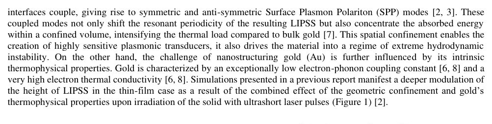
<figcaption class="paper-figure-caption"><b>Fig 1.</b> Figure 1: LIPSS patterns for (a) bulk, (b) thin (thickness 𝑑 = 11 nm) Au film. Double-headed arrow indicates the orientation of the laser beam polarization. Furthermore, upon femtosecond excitation, the electron subsystem reaches high temperatures while the lattice remains relatively cold for several picoseconds. This ‘bottleneck’ in energy transfer, combined with the thermal insulation provided by a glass substrate leads to a prolonged molten state. Once the lattice temperature exceeds the melting point, the thin liquid layer becomes susceptible to strong hydrodynamic forces. The most prominent physical process characterizing, then, the response of the material is related to the produced...</figcaption>
</figure>
<figure class="paper-figure-card">
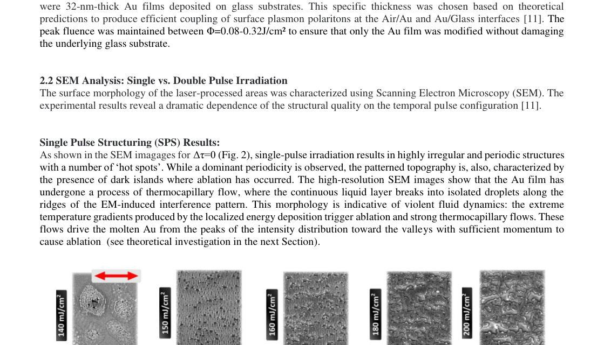
<figcaption class="paper-figure-caption"><b>Fig 2.</b> Figure 2: LIPSS patterns at different fluences assuming single pulses. Double-headed arrow indicates the orientation of the laser beam polarization. Double Pulse Structuring (DPS) Results: By contrast, the introduction of a delay Δτ (Fig. 3) produces highly-regular, continuous LIPSS for some combinations of the laser parameters (i.e. special choice of pulse separation and fluence). The SEM analysis for topographies obtained in those conditions shows that the irregular ripple segments in SPI are replaced by long-range highly-uniform periodic patterns that extend across the entire laser-scanned area. This suggests that the double-pulse protocol successfully manages the fluid dynamic evolution...</figcaption>
</figure>
<figure class="paper-figure-card">
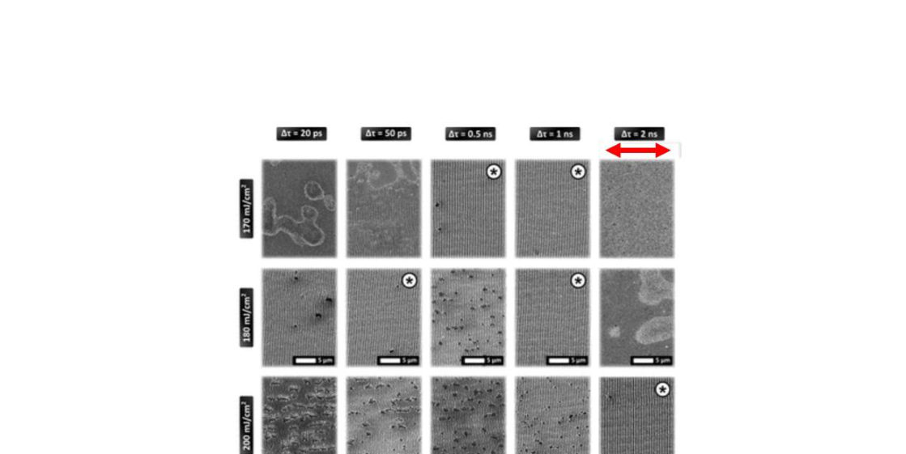
<figcaption class="paper-figure-caption"><b>Fig 3.</b> Figure 3: LIPSS patterns at different fluences and pulse separations. Double-headed arrow indicates the orientation of the laser beam polarization. Homogenous LIPSS patterns are produced for conditions marked with a star (*).</figcaption>
</figure>
<figure class="paper-figure-card">
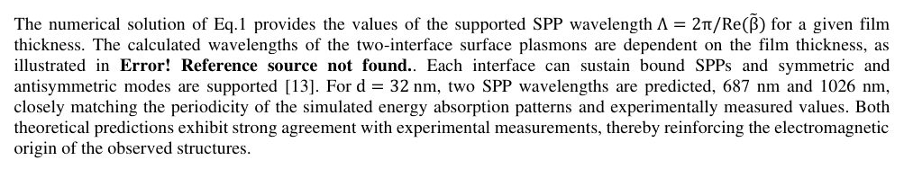
<figcaption class="paper-figure-caption"><b>Fig 4.</b> Figure 4: (a) Periodicities of SPP at air/Au and Au/SiO2 interfaces as a function of the Au film thickness, (b) the electromagnetic profile and the produced near- and far-fields are illustrated in the transverse plane, (c) distribution of the electric field in air, metal and dielectric material on the propagation plane, (d) periodicities of the electromagnetic waves. To investigate the characteristics of the excited surface waves which are the precursors to both the periodicity and orientation of LIPSS, an initially non-planar surface was considered. Surface roughness on Au was modeled as a random arrangement of semispherical protrusions with radius R=16 nm [2, 7, 11, 14]. Electromagnetic...</figcaption>
</figure>
<figure class="paper-figure-card">
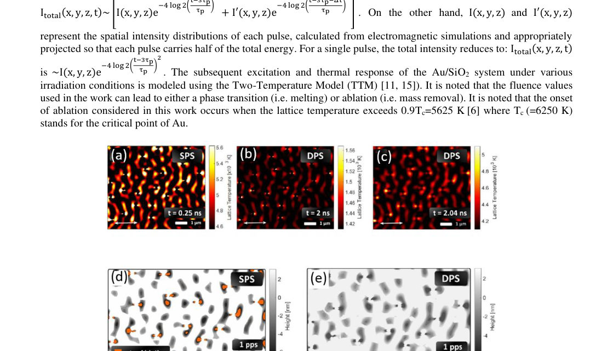
<figcaption class="paper-figure-caption"><b>Fig 5.</b> Figure 5: (a) Lattice temperature spatial profile on the surface of Au for SPS at t = 0.25 ns (white regions show ablated part). Lattice temperature spatial profile on the surface of Au at t = 2 ns (b) and t ∼2.04 ns (c) (the white double-headed arrow indicates the laser polarization). Simulation results of surface relief resulting from irradiation with Φ = 280 mJ/cm2 for a single pulse for SPS (d) and a single pair of pulses for DPS (e). Orange-colored areas indicate ablation in (d). The surface modification is analyzed through the dynamics of hydrothermal waves generated by the produced phase transitions. The laser conditions used in the simulations Φ = 0.28 J/cm2 are appropriately...</figcaption>
</figure>
</div>

<p><strong>Summary.</strong> This work details the controlled fabrication of highly-ordered plasmonic nanostructures on thin gold films using a double-pulse femtosecond laser approach. By managing the transient fluid dynamics through optimized pulse timing, the researchers suppress chaotic melting and achieve structures exhibiting narrow Surface Lattice Resonances. These highly ordered plasmonic arrays are presented as a robust platform for next-generation, ultrasensitive biosensing.</p>
<p><strong>Why it may be interesting.</strong> The detailed coupling between electromagnetic excitation (plasmons) and complex non-equilibrium thermofluid dynamics (Marangoni flow) to achieve a desired quantum-optical feature (narrow resonance) is highly relevant to open quantum systems and light-matter interaction in structured media.</p>
<details>
<summary>Detailed structure</summary>
<p><strong>Main problem.</strong> The primary goal is to fabricate highly-ordered Laser-Induced Periodic Surface Structures (LIPSS) on thin metallic films for use in high-sensitivity plasmonic biosensing.</p>
<p><strong>Main result.</strong> The use of a double-pulse femtosecond laser scheme, optimized with a specific interpulse delay, successfully controls the fluid dynamics, leading to highly-uniform LIPSS that exhibit narrow Surface Lattice Resonances (SLRs).</p>
<p><strong>Method.</strong> The study combines experimental techniques (femtosecond laser processing, SEM, ellipsometry) with theoretical modeling (3D-FDTD, Two-Temperature Model, Navier-Stokes equations).</p>
<p><strong>Model / system.</strong> The system involves thin gold films where the process is governed by a synergy of coupled Surface Plasmon Polaritons (SPPs) excitation, electron-lattice thermalization, and subsequent Marangoni fluid flow dynamics.</p>
<p><strong>Key observables.</strong> Surface morphology (SEM), resonance spectral position ($\lambda_{	ext{Res}}$), and resonance linewidth (FWHM, Quality factor Q).</p>
<p><strong>Important parameters / regimes.</strong> Interpulse delay ($\Delta	au \approx 1.2$ ns), film thickness (32 nm), and laser fluence ($\Phi$).</p>
<p><strong>Assumptions / limitations.</strong> The formation process is modeled as a three-step sequence: plasmonic energy deposition, electron thermalization, and fluid dynamics, with the single-pulse regime being dominated by uncontrolled hydrodynamic instabilities.</p>
<p><strong>Figures summary.</strong> Figures compare LIPSS patterns from single vs. double pulses, show lattice temperature profiles, and present ellipsometry data confirming the narrow SLR signatures at specific wavelengths.</p>
<p><strong>Paper structure.</strong> The paper develops a multiscale model encompassing electromagnetic field calculation (FDTD), thermal modeling (TTM), and fluid dynamics (NSE). It then demonstrates that double-pulse irradiation controls the melt dynamics, leading to the formation of highly ordered structures exhibiting measurable plasmonic resonances.</p>
</details>
<details>
<summary>Abstract</summary>
<p>The fabrication of highly ordered laser-induced periodic surface structures (LIPSS) on thin metallic films is dictated, predomaninatly, by a synergy of periodic electromagnetic energy deposition and complex fluid dynamics. In this work, we present a combined experimental and theoretical study on the formation of ultra-regular LIPSS on 32-nm-thick Au films using a double-pulse femtosecond laser scheme. We demonstrate that for thin films, the excitation of coupled Surface Plasmon Polaritons (SPPs) at both interfaces dictates the initial energy distribution. On the othe hand, the final morphology is greatly influenced by hydrodynamical processes. Interestingly, due to the low electron-phonon coupling of Au and the high thermal confinement of the thin film, single-pulse irradiation leads to uncontrolled hydrodynamic instabilities a non uniform topographies. Thus, we demonstrate that a double-pulse approach with an optimized interpulse delay (Δτ=1.2 ns) effectively controls the melt duration and viscosity, suppressing complex fluid motion and promoting the growth of highly ordered arrays. These structures support narrow surface lattice resonances (SLRs) suitable for high-sensitivity plasmonic biosensing.</p>
</details>
<p><sub><a href="#top">↑ back to top</a></sub></p>

<p><a id="paper-2608.20746"></a></p>
<h3 id="spectral-anisotropy-in-transition-radiation-from-biaxial-media"><a href="http://arxiv.org/abs/2608.20746v1">Spectral Anisotropy in Transition Radiation from Biaxial Media</a></h3>
<p><strong>Authors:</strong> Sven Ebel, Bibi Mary Francis, Min Seok Jang, Brian D. Gerardot, N. Asger Mortensen, Mauro Brotons-Gisbert, Sergii Morozov<br>
<strong>Type:</strong> both · <strong>Category:</strong> other · <strong>PDF:</strong> <a href="https://arxiv.org/pdf/2608.20746v1">https://arxiv.org/pdf/2608.20746v1</a><br>
<strong>Analysis basis:</strong> full PDF text, analyzed in chunks
<strong>Topic relevance:</strong> <code>interference shaping light</code> <strong>3/5</strong> · <code>quantum measurements</code> <strong>2/5</strong></p>
<div class="figure-strip-hint">↔ Scroll figures horizontally</div>
<div class="paper-figures-scroll">
<figure class="paper-figure-card">
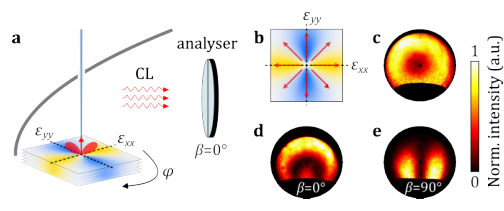
<figcaption class="paper-figure-caption"><b>Fig 1.</b> FIG. 1: Polarization-selective detection of anisotropic transition radiation. (a) Schematic of the polarization- selective CL geometry, where transition radiation from an anisotropic crystal is detected through a linear polarizer while the crystal is rotated relative to the detection axis by angle φ. (b) Schematic of the radially polarized transition-radiation field, where the detected field projects differently onto the two principal in-plane optical axes. (c-e) Angle-resolved isotropic transition radiation from vacuum-platinum interface, mea- sured without a polarizer (c) and with the analyser at β = 0◦</figcaption>
</figure>
<figure class="paper-figure-card">
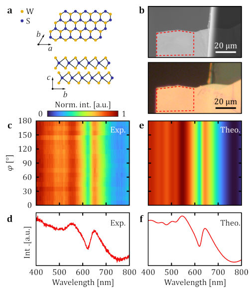
<figcaption class="paper-figure-caption"><b>Fig 2.</b> FIG. 2: Isotropic transition radiation from suspended WS2 in vacuum. (a) Crystal structure of 2H-WS2. (b) Scanning electron microscopy and optical images of the in- vestigated 100 nm-thick WS2 flake; the red dashed outline marks the suspended region used for measurements, while the supporting grid can be seen on the right. (c,e) Experimen- tal and calculated polarization-resolved transition-radiation spectra as a function of in-plane sample rotation angle φ. (d,f) Corresponding spectral profiles acquired at φ = 90◦. Exper- imental spectra were acquired at 30 keV and 1.4 nA with an integration time of 90 s.</figcaption>
</figure>
<figure class="paper-figure-card">
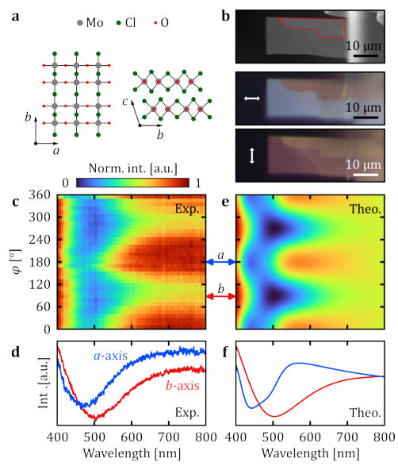
<figcaption class="paper-figure-caption"><b>Fig 3.</b> FIG. 3: Anisotropic transition radiation from sus- pended MoOCl2 in vacuum. (a) Crystal structure of MoOCl2, showing the the crystallographic axes. (b) Sec- ondary electron and optical image of the investigated crys- tal. The red dashed outline indicates the suspended region used for the measurements, while the supporting grid can be seen on the right. The white arrows in optical images indi- cate the orientation of the incident light polarization. (c,e) Experimental and calculated polarization-resolved transition- radiation spectra as a function of in-plane sample rotation angle φ. (d,f) Corresponding spectral profiles acquired for the principal a- and b-axes at φ = 180◦and φ = 90◦, re-...</figcaption>
</figure>
<figure class="paper-figure-card">
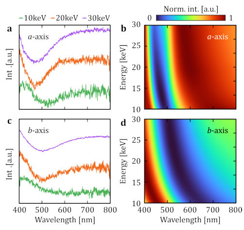
<figcaption class="paper-figure-caption"><b>Fig 4.</b> FIG. 4: Electron-energy tuning of anisotropic transition-radiation in MoOCl2. Experimental and cal- culated transition-radiation spectra for the crystallographic as a function of electron-beam energy for (a-b) a-axis and (b-c) b-axis. Experimental spectra were acquired at a beam current of 1.4 nA with an integration time of 90 s.</figcaption>
</figure>
</div>

<p><strong>Summary.</strong> This work reports on the experimental observation and theoretical modeling of spectral anisotropy in transition radiation emitted from biaxial van der Waals crystals. By rotating the sample and measuring polarization-resolved spectra, the authors prove that TR is highly sensitive to the material's orientation-dependent dielectric response. This opens up optical anisotropy as a new diagnostic tool for free electron-driven spectroscopy.</p>
<p><strong>Why it may be interesting.</strong> While the core physics is in condensed matter optics, the technique itself—using electron-beam induced radiation to map anisotropic dielectric tensors—is a powerful, non-destructive diagnostic tool applicable to characterizing complex quantum materials.</p>
<details>
<summary>Detailed structure</summary>
<p><strong>Main problem.</strong> The study investigates how the spectral anisotropy of transition radiation (TR) is influenced by the orientation-dependent dielectric response of biaxial optical media.</p>
<p><strong>Main result.</strong> The authors experimentally demonstrate and theoretically model that TR spectra exhibit pronounced, measurable anisotropy when measured from biaxial crystals, confirming that TR is a sensitive probe of the material's optical axis dependence.</p>
<p><strong>Method.</strong> The research combines experimental cathodoluminescence (CL) spectroscopy, involving sample rotation and polarization-selective detection, with the development of a thin-film theoretical model.</p>
<p><strong>Model / system.</strong> The physical system involves biaxial van der Waals crystals (like GeS and MoOCl2) acting as the source. The model adapts the standard TR intensity formula to incorporate the two principal in-plane dielectric responses ($\varepsilon_{xx}$ and $\varepsilon_{yy}$) to predict orientation-dependent spectra.</p>
<p><strong>Key observables.</strong> The primary observables are the polarization-resolved transition radiation spectra, measured as a function of the crystal's rotation angle ($\phi$) and the electron beam energy ($E$).</p>
<p><strong>Important parameters / regimes.</strong> Key parameters include the crystal's principal dielectric axes, the electron beam energy (10–30 keV), and the orientation angle ($\phi$).</p>
<p><strong>Assumptions / limitations.</strong> The theoretical model uses an effective projection model to combine principal-axis intensities, which is noted as an approximation compared to a full vectorial treatment of the dielectric tensor.</p>
<p><strong>Figures summary.</strong> Figures illustrate the polarization-selective CL geometry, show angle-resolved spectra for isotropic materials (WS2), and demonstrate the periodic spectral changes and energy tunability for anisotropic materials (MoOCl2) along their principal axes.</p>
<p><strong>Paper structure.</strong> The paper establishes the physical problem of anisotropy in TR, details the experimental setup using CL spectroscopy on biaxial crystals, develops an anisotropic thin-film model, and presents results showing the successful reproduction of angle-dependent spectra and energy shifts.</p>
</details>
<details>
<summary>Abstract</summary>
<p>In anisotropic optical media, the electromagnetic response depends on the orientation of the optical field relative to the material's principal dielectric axes. While this direction dependence is well understood in conventional optics, it should also influence light-generation processes driven by free electrons. Here, we experimentally observe spectrally anisotropic transition radiation from biaxial van der Waals crystals. Using cathodoluminescence spectroscopy on germanium sulphide (GeS) and molybdenum oxydichloride (MoOCl$_2$) crystals, we show that the transition-radiation spectra differ along the principal in-plane optical axes. To describe this spectral anisotropy, we develop a thin-film transition-radiation model that reproduces the experimental observations. Our results demonstrate that transition radiation is a sensitive probe of the axis-dependent dielectric response of biaxial optical media and suggest that optical anisotropy can provide an additional degree of freedom for free electron-driven spectroscopy, radiation sources, and transition-radiation-based diagnostics.</p>
</details>
<p><sub><a href="#top">↑ back to top</a></sub></p>

<p><a id="paper-2608.21200"></a></p>
<h3 id="symmetry-induced-weyl-nodes-in-interacting-multi-terminal-josephson-junctions"><a href="http://arxiv.org/abs/2608.21200v1">Symmetry-Induced Weyl Nodes in Interacting Multi-Terminal Josephson Junctions</a></h3>
<p><strong>Authors:</strong> Peter Zalom, Gustavo Diniz, David Christian Ohnmacht, Wolfgang Belzig<br>
<strong>Type:</strong> theory · <strong>Category:</strong> other · <strong>PDF:</strong> <a href="https://arxiv.org/pdf/2608.21200v1">https://arxiv.org/pdf/2608.21200v1</a><br>
<strong>Analysis basis:</strong> full PDF text, analyzed in chunks
<strong>Topic relevance:</strong> <code>analog quantum simulation</code> <strong>3/5</strong> · <code>Keldysh / 2PI / non-Gaussian methods</code> <strong>1/5</strong> · <code>methods for driven-dissipative</code> <strong>1/5</strong></p>
<div class="figure-strip-hint">↔ Scroll figures horizontally</div>
<div class="paper-figures-scroll">
<figure class="paper-figure-card">
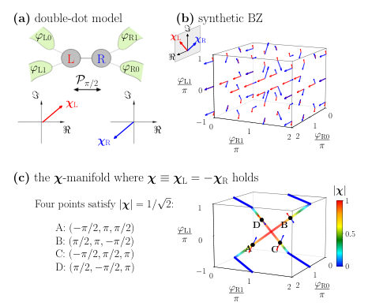
<figcaption class="paper-figure-caption"><b>Fig 1.</b> FIG. 1. Symmetry Pπ/2 in double-dot model (1): (a) SC en- vironments of left (i = L) and right (i = R) dots are fully defined by total coupling strengths Γi ≡Γi0 + Γi1 and ge- ometric factors χi. (b) In the gauge φL0 = 0, phases φL1, φR0, φR1 span the sBZ where pairs of (χL, χR) are assigned. (c) Pπ/2 can only be satisfied on the χ-manifold defined by χL = −χR. The example has all dot-lead couplings the same. The bar legend shows |χ| = |χL| = |χR| on the manifold. Blue-colored lines with |χ| = 0 form nodal lines in the sBZ.</figcaption>
</figure>
<figure class="paper-figure-card">
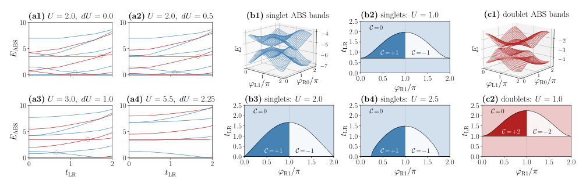
<figcaption class="paper-figure-caption"><b>Fig 2.</b> FIG. 2. AL theory results: (a1)–(a4) Sweeping tLR on the χ-manifold induces isolated singlet (blue circles) and doublet (red circles) band crossings via (9) and (10). Singlet crossings survive finite dU but disappear beyond a U-threshold (a4); doublet crossings are U-independent. (b1), (c1) Weyl cone and doubly degenerate Weyl cone formed by the two lowest singlet and doublet bands respectively in the φL1-φR0 plane at φR1 = −π/2. (b2)–(b4), (c2) Analytic topological phase diagrams from (9) and (10) for singlet and doublet ABS bands respectively (details in End Matter) showing topological phases of finite Chern numbers C = ±1 and C = ±2 respectively. All panels: Γil = δ = 1, in (a1)–(a4):...</figcaption>
</figure>
<figure class="paper-figure-card">
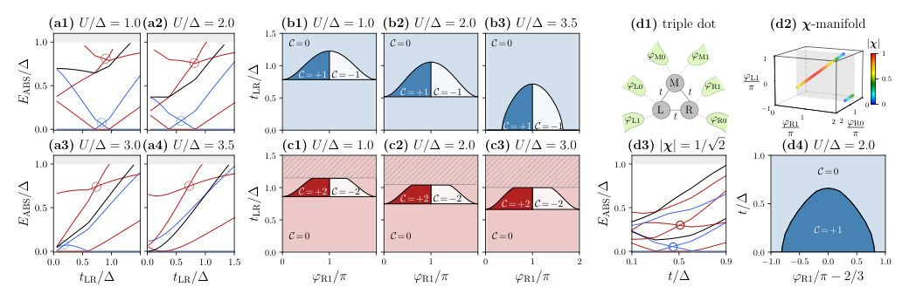
<figcaption class="paper-figure-caption"><b>Fig 3.</b> FIG. 3. DMRG results: (a1)–(a4) Sweeping tLR at |χ| ≈0.31 with ΓL = ΓR = ∆and δL = δR = ∆reveals singlet (blue) and doublet (red) crossings (circles). Increasing U ≡UL = UR shifts singlet crossings to tLR →0 until they vanish (a4). Doublet crossings show negligible U-dependence. (b1)–(b3) Crossing values of tLR at fixed φR1 with varied |χ| translate into singlet topological phase diagrams. (c1)–(c3) Doublet phase diagrams have inaccessible regions (hatched) where crossings escape into the continuum. (d1) Triple dot with equal interdot hoppings t supports the P2π/3 cyclic permutation symmetry. (d2) When φM0 =4π/3 and φM1 =φR1 + 2π/3, the sBZ becomes 3D and P2π/3 can be satisfied on a 1D...</figcaption>
</figure>
<figure class="paper-figure-card">
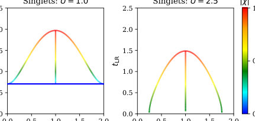
<figcaption class="paper-figure-caption"><b>Fig 4.</b> FIG. 4. Topologically distinct phases in model (1) require the emergence of boundaries where band gaps close at Weyl nodes. Using the χ-manifold defining feature χL = −χR one can predict three distinct lines of Weyl nodes which obey Eq. 12. In panels (a) and (b) we show these boundaries to- gether with their |χ|-dependence according to the color bar.</figcaption>
</figure>
<figure class="paper-figure-card">
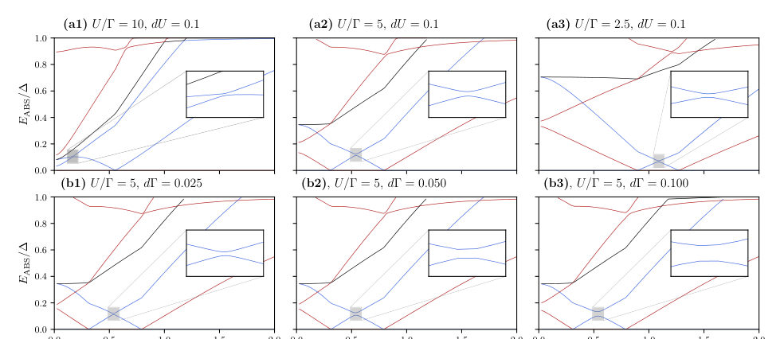
<figcaption class="paper-figure-caption"><b>Fig 5.</b> FIG. 5. Fate of the symmetry-pinned Weyl nodes when Pπ/2 is broken by asymmetries, obtained by adiabatic DMRG sweeps of tLR at a fixed point of the χ-manifold (χL = −χR) with U = 2.0 ∆and δL = δR: (a1)–(a3) Interaction asymmetry dU = 0.1 ∆ at increasing hybridization (i. e. U/Γ = 10, 5 and 2.5) causes opening of the gap between same-spin ABS bands which is small compared to ∆and is controlled by Γ. (b1)–(b3) Tunneling asymmetry ηΓ = |ΓL −ΓR|/(ΓL + ΓR) = 0.025, 0.050 and 0.100 at dU = 0 and U/Γ = 5, opens the band gap monotonically and considerably faster than dU.</figcaption>
</figure>
</div>

<p><strong>Summary.</strong> This work demonstrates that emergent geometric symmetries dictate the formation of Weyl nodes in interacting multi-terminal Josephson junctions. By confining these topological singularities to a specific manifold ($\chi$-manifold), the authors provide a robust, gate-tunable design principle for creating quantum devices exhibiting non-trivial topological properties.</p>
<p><strong>Why it may be interesting.</strong> The explicit connection between geometric symmetries, topological invariants (Weyl nodes), and tunable superconducting junctions provides a powerful, symmetry-protected design principle for realizing exotic quantum states in solid-state devices.</p>
<details>
<summary>Detailed structure</summary>
<p><strong>Main problem.</strong> The paper aims to characterize the mechanism by which an emergent geometric symmetry generates non-trivial band topology, specifically Weyl nodes, within interacting multi-terminal Josephson junctions (MTJJs).</p>
<p><strong>Main result.</strong> The symmetry confines the topological singularities (Weyl nodes) to an analytically defined manifold ($\chi$-manifold), providing a general design principle for fabricating devices with predictable topological signatures.</p>
<p><strong>Method.</strong> The analysis combines analytical derivations in the Atomic Limit (AL) approximation with numerical simulations using Density Matrix Renormalization Group (DMRG) on the full interacting model.</p>
<p><strong>Model / system.</strong> The system is a quantum-dot-based multi-terminal Josephson Junction (MTJJ) modeled by a Hamiltonian involving dot energies, interdot couplings, and superconducting self-energies. The physics is analyzed by examining spectral symmetries.</p>
<p><strong>Key observables.</strong> Weyl nodes (with charges $\pm 1$ in the singlet sector and $\pm 2$ in the doublet sector), Chern numbers, and the gap opening between same-spin Andreev bound states (ABS).</p>
<p><strong>Important parameters / regimes.</strong> Interdot coupling ($t_{LR}$), on-site repulsion ($U$), interaction asymmetry ($d_U$), and the geometric symmetry parameters ($\chi_i$).</p>
<p><strong>Assumptions / limitations.</strong> The analysis heavily relies on the Atomic Limit (AL) approximation for deriving analytic boundary conditions, although these are compared against full DMRG results.</p>
<p><strong>Figures summary.</strong> Figures illustrate analytic phase diagrams showing the predicted locations of Weyl nodes on the $\chi$-manifold, and subsequent figures show how these nodes are affected (e.g., gap opening) when symmetries are explicitly broken by interaction asymmetries.</p>
<p><strong>Paper structure.</strong> The paper systematically introduces the Hamiltonian and the role of geometric symmetries ($P_\alpha$), derives the analytic conditions for topological crossings on the $\chi$-manifold in the AL, and then validates these predictions by analyzing the full interacting model using DMRG sweeps.</p>
</details>
<details>
<summary>Abstract</summary>
<p>We show that an emergent geometric symmetry generates non-trivial topology in quantum-dot-based multi-terminal Josephson junctions. It confines same-spin Andreev bound state crossings to an analytic one-dimensional manifold of the synthetic Brillouin zone, where interdot coupling selects Weyl nodes of charge $\pm1$ in the singlet sector and doubly degenerate cones of charge $\pm2$ in the doublet sector, at gate-tunable locations. The mechanism yields a spectroscopic detection protocol and a design principle for fabricating devices with non-trivial topological signatures.</p>
</details>
<p><sub><a href="#top">↑ back to top</a></sub></p>

<p><a id="paper-2608.20928"></a></p>
<h3 id="artificial-spin-ice-systems-on-single-edge-length-tilings"><a href="http://arxiv.org/abs/2608.20928v1">Artificial spin ice systems on single edge length tilings</a></h3>
<p><strong>Authors:</strong> Ellie Weightman, Sam Coates<br>
<strong>Type:</strong> theory · <strong>Category:</strong> statistical mechanics · <strong>PDF:</strong> <a href="https://arxiv.org/pdf/2608.20928v1">https://arxiv.org/pdf/2608.20928v1</a><br>
<strong>Analysis basis:</strong> full PDF text, analyzed in chunks
<strong>Topic relevance:</strong> <code>analog quantum simulation</code> <strong>3/5</strong> · <code>methods for driven-dissipative</code> <strong>1/5</strong></p>
<div class="figure-strip-hint">↔ Scroll figures horizontally</div>
<div class="paper-figures-scroll">
<figure class="paper-figure-card">
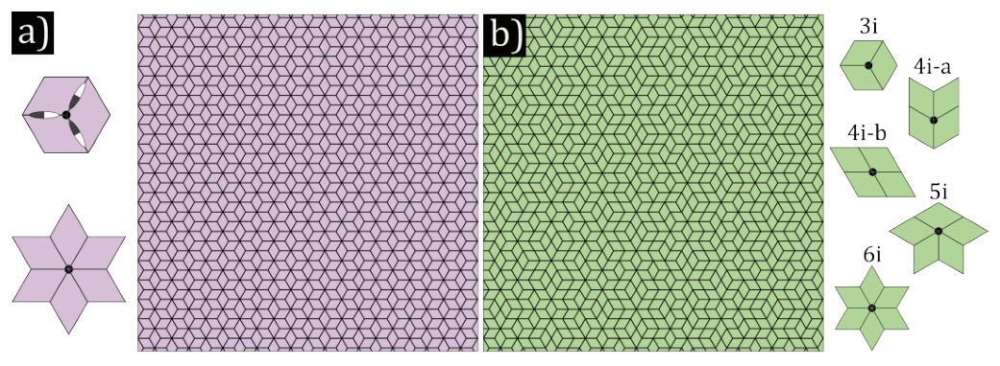
<figcaption class="paper-figure-caption"><b>Fig 1.</b> FIG. 1. The two tilings used as artificial spin ice lattice geometries. The periodic dice tiling (a) with two vertex types of coordination 3 and 6, and the aperiodic H 1</figcaption>
</figure>
<figure class="paper-figure-card">
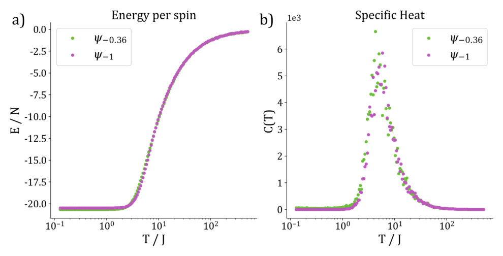
<figcaption class="paper-figure-caption"><b>Fig 2.</b> FIG. 2. (a,b) Total system energy per spin and specific heat, respectively, averaged over 15 simulations of 3106 and 3114 nanoislands in the ψ−1 and ψ−0.36 geometry.</figcaption>
</figure>
<figure class="paper-figure-card">
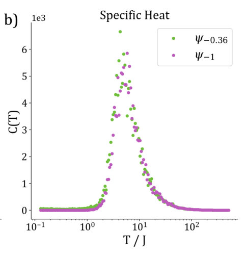
<figcaption class="paper-figure-caption"><b>Fig 3.</b> Figure 4(a) shows the lowest 4 energy configurations for each vertex type obtained from micromagnetic simu-</figcaption>
</figure>
<figure class="paper-figure-card">
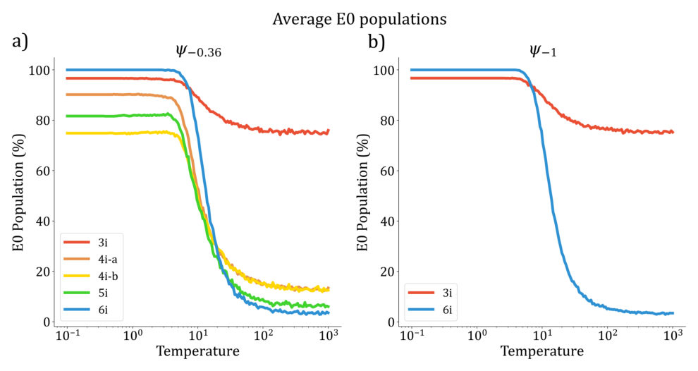
<figcaption class="paper-figure-caption"><b>Fig 4.</b> FIG. 3. E0 populations for each vertex type in the ψ−1 and ψ−0.36 geometries as the temperature of the system is reduced.</figcaption>
</figure>
<figure class="paper-figure-card">
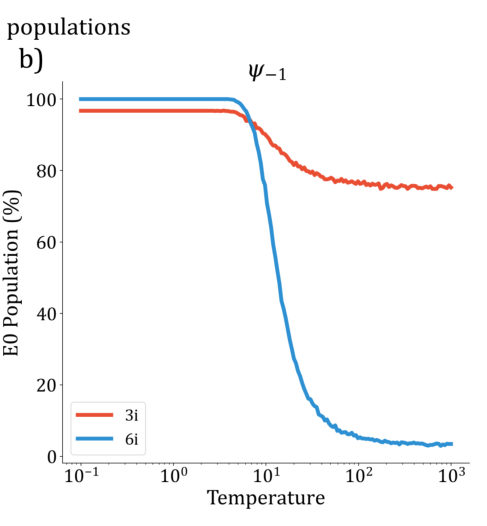
<figcaption class="paper-figure-caption"><b>Fig 5.</b> Figure 5(b) shows two such environments, where on the left side we see an E1 state, and on the right side an E2 state. Relevant tile edges are decorated with is- lands, as in Figure I(a). For the E1, the 5i vertex is indi- cated by a green circle – we note that in Figure 4(a), its middle spin is degenerate. Nearby, there are two 6i sat- isfied vertices whose spins are anti-parallel with respect to one another, representing two different magnetic do- mains, which we indicate by red and blue circles. These domains are coupled via the surrounding lowest energy states of the two 4i-a and 3i islands, which leaves the 5i vertex ‘pinned’ in its E1 state. Flipping either all of the spins on the red...</figcaption>
</figure>
</div>

<p><strong>Summary.</strong> This paper investigates Artificial Spin Ices on complex, aperiodic lattices, moving beyond simple periodic structures. Using Monte Carlo simulations, the authors map out the low-energy magnetic configurations and identify how the lattice geometry dictates the formation of magnetic domains and topological defects like monopoles. This work advances the understanding of frustrated magnetism in engineered materials.</p>
<p><strong>Why it may be interesting.</strong> The study uses classical statistical mechanics tools (MC, entropy calculation) to model complex magnetic frustration, which shares conceptual links with frustrated quantum spin systems and domain dynamics in condensed matter.</p>
<details>
<summary>Detailed structure</summary>
<p><strong>Main problem.</strong> The study extends Artificial Spin Ice (ASI) simulations from periodic tilings to aperiodic hexagonal tilings to understand how lattice geometry affects magnetic ground states.</p>
<p><strong>Main result.</strong> The aperiodic tiling introduces new vertex types and demonstrates that the system's low-energy states are characterized by domain boundaries and localized magnetic charges (monopoles).</p>
<p><strong>Method.</strong> The research employs Metropolis Monte Carlo simulations to cool the spin arrays to low-energy configurations, supplemented by micromagnetic simulations for vertex energy analysis.</p>
<p><strong>Model / system.</strong> The system consists of artificial spin ices (ASIs) modeled as arrays of nanomagnets on geometric lattices (e.g., single edge length tilings). The magnetic interactions are governed by a Hamiltonian including nearest-neighbor and dipolar terms.</p>
<p><strong>Key observables.</strong> Low-energy spin configurations, residual entropy ($S_r$), vertex populations (E0, E1, E2), and the formation/location of magnetic charges (monopoles).</p>
<p><strong>Important parameters / regimes.</strong> Coupling ratio $|J/D| = 1.95$; simulation size of $\approx 3114$ islands; comparison between periodic (dice) and aperiodic tilings.</p>
<p><strong>Assumptions / limitations.</strong> Open boundary conditions are assumed to be sufficient, and the analysis focuses on the classical energy landscape of the spin system.</p>
<p><strong>Figures summary.</strong> Figures illustrate the comparison between periodic and aperiodic tilings, show specific heat and energy per spin for different geometries, and map out the final spin states revealing domain boundaries and monopole charges.</p>
<p><strong>Paper structure.</strong> The paper progresses by first establishing the model on simple tilings, then extending the analysis to aperiodic structures, and finally detailing the physics of domain wall formation and monopole behavior when multiple ground states are present.</p>
</details>
<details>
<summary>Abstract</summary>
<p>Artificial spin ices (ASIs) are decorations of single domain nanomagnets on geometric lattices allowing for study of magnetic interactions on easily varied lattice geometries. We extend the study of ASIs on single rhomb tilings by simulating an ASI with the aperiodic hexagonal $H_{\frac{1}{2}\frac{1}{2}}$ tiling as the base structure, and the periodic dice lattice for additional comparison. Using a point dipole metropolis Monte Carlo approach, we cool our arrays of nanoislands to form a low energy configuration, assessing individual vertex excitations as identified through complementary micromagnetic simulations. Using the energy and charge landscape of final spin states, we propose a potential ground state spin configuration for the aperiodic system.</p>
</details>
<p><sub><a href="#top">↑ back to top</a></sub></p>

<p><a id="paper-2608.21162"></a></p>
<h3 id="continuously-control-of-polarization-via-electrically-driven-long-distance-superlubric-sliding"><a href="http://arxiv.org/abs/2608.21162v1">Continuously control of polarization via electrically driven long-distance superlubric sliding</a></h3>
<p><strong>Authors:</strong> Peiyao Shi, Menghao Wu<br>
<strong>Type:</strong> theory · <strong>Category:</strong> other · <strong>PDF:</strong> <a href="https://arxiv.org/pdf/2608.21162v1">https://arxiv.org/pdf/2608.21162v1</a><br>
<strong>Analysis basis:</strong> full PDF text, analyzed in chunks
<strong>Topic relevance:</strong> <code>Frenkel-Kontorova</code> <strong>3/5</strong></p>
<div class="figure-strip-hint">↔ Scroll figures horizontally</div>
<div class="paper-figures-scroll">
<figure class="paper-figure-card">
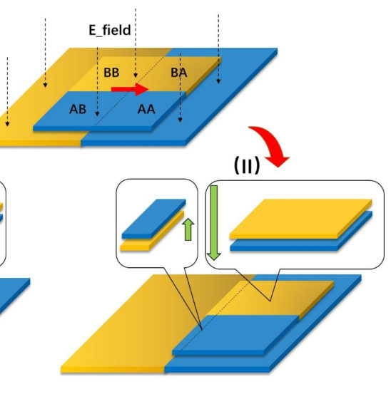
<figcaption class="paper-figure-caption"><b>Fig 1.</b> Figure 1 (A) Charge transfer and vertical polarization in AB hetero-bilayer. (B) The design of</figcaption>
</figure>
<figure class="paper-figure-card">
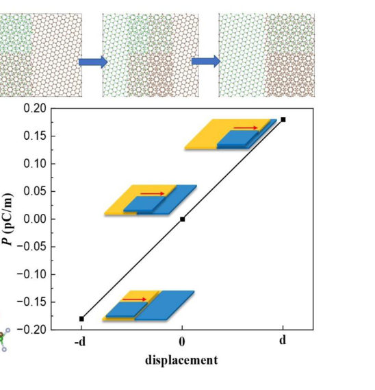
<figcaption class="paper-figure-caption"><b>Fig 2.</b> Figure 2. (A) Gr/BN heterobilayer with a large twist angle and a vertical polarization marked</figcaption>
</figure>
<figure class="paper-figure-card">
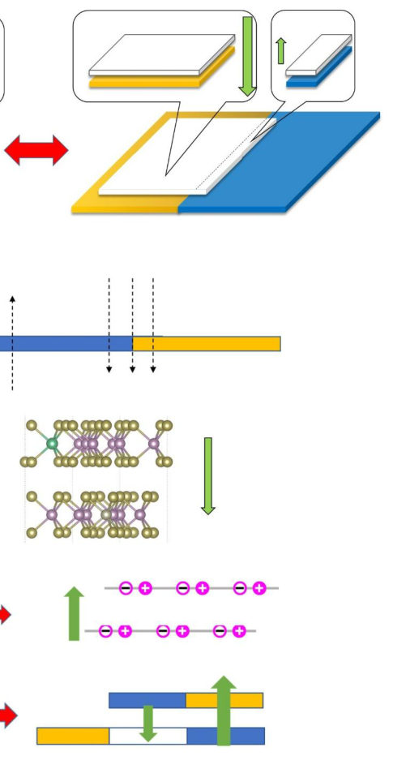
<figcaption class="paper-figure-caption"><b>Fig 3.</b> Figure 3. (A) The design of superlubric sliding ferroelectric device based on PN junction</figcaption>
</figure>
</div>

<p><strong>Summary.</strong> This paper proposes a novel design for achieving continuously tunable ferroelectric polarization by exploiting superlubric sliding in incommensurate 2D material heterojunctions. Using DFT calculations, the authors predict ultra-low switching barriers ($\mu	ext{eV}$) driven by a low vertical electric field. This breakthrough combines the best features of superlubricity and ferroelectricity for advanced electronic applications like artificial synapses.</p>
<p><strong>Why it may be interesting.</strong> While focused on condensed matter, the concept of controlling polarization via low-energy, electrically driven sliding interfaces presents a novel mechanism for energy-efficient switching, which has parallels in designing quantum memory or switching elements.</p>
<details>
<summary>Detailed structure</summary>
<p><strong>Main problem.</strong> The research aims to combine the low-energy switching of sliding ferroelectricity with the ultra-low friction of superlubric sliding to achieve continuous polarization control.</p>
<p><strong>Main result.</strong> The authors propose a design where vertical polarization can be continuously controlled via superlubric sliding of incommensurate interfaces, achieving switching barriers as low as the $\mu	ext{eV}$ magnitude.</p>
<p><strong>Method.</strong> Theoretical modeling using Density Functional Theory (DFT) calculations, specifically employing the Nudged Elastic Band (NEB) method to map out sliding pathways and calculate polarization.</p>
<p><strong>Model / system.</strong> The system involves lateral heterojunctions formed by stacking 2D materials (e.g., graphene/BN or Gr/TMDs) in an incommensurate configuration, allowing for superlubric sliding.</p>
<p><strong>Key observables.</strong> Continuous tunable vertical polarization ($P$), sliding switching barrier ($\mu	ext{eV}$ magnitude), and long ion displacements.</p>
<p><strong>Important parameters / regimes.</strong> Low vertical voltage driving force, lattice mismatch leading to incommensurate interfaces, and thermal stability relative to $k_B T$.</p>
<p><strong>Assumptions / limitations.</strong> The mechanism relies on the interface becoming incommensurate upon large twist angles, and the total sliding barrier must exceed $k_B T$ for stability.</p>
<p><strong>Figures summary.</strong> Figures illustrate the superlubric device design based on bilayer lateral junctions, showing polarization switching under an electric field, and detail the calculated sliding pathway barriers.</p>
<p><strong>Paper structure.</strong> The paper first identifies the challenge of combining superlubricity and switchable ferroelectricity. It then proposes the heterojunction design, details the DFT/NEB calculations to predict polarization control and low barriers, and concludes by discussing the implications for artificial synaptic devices.</p>
</details>
<details>
<summary>Abstract</summary>
<p>Sliding ferroelectricity widely exists in various van der Waals bilayers or multilayers, which is induced by asymmetric stacking of commensurate interface. The greatly reduced switching barriers via interlayer sliding lead to high speed with low energy cost, while they are still much higher compared with superlubric sliding of incommensurate interfaces. The polarizations of such incommensurate interfaces are not switchable, which is the major obstacle of combing superlubricity and sliding ferroelectricity for ultralow barriers. Here we propose a design of such combination based on previous synthesis of lateral heterojunctions of 2D materials, which can be extensively applicable to various systems including PN junctions. In such long-distance superlubric ferroelectricity, the vertical polarization can be continuously controlled by superlubric sliding of incommensurate interfaces between lateral heterojunction bilayers, where the series of multiple stable states are long-sought for artificial synaptic devices. The unconventionality of our findings does not only include unprecedented barriers down to the magnitude of mu-eV, but also unprecedented long ion displacements distinct from the small deviations in classical paradigm of ferroelectricity. Our predicted superlubric sliding electrically driven by low vertical voltage is also hitherto reported, much more efficient compared with previously reported sliding mechanically driven by tips, resolving a major issue for practical applications.</p>
</details>
<p><sub><a href="#top">↑ back to top</a></sub></p>

<p><a id="paper-2608.20780"></a></p>
<h3 id="planar-nanofluidic-memristors-enabled-by-surface-charge-gradient"><a href="http://arxiv.org/abs/2608.20780v1">Planar Nanofluidic Memristors Enabled by Surface Charge Gradient</a></h3>
<p><strong>Authors:</strong> Zhongyuan Zhao, Ziyi Yin, Chudi Qi, Yuheng Li, Shoushan Fan, Qunqing Li, Yang Wei<br>
<strong>Type:</strong> theory · <strong>Category:</strong> statistical mechanics · <strong>PDF:</strong> <a href="https://arxiv.org/pdf/2608.20780v1">https://arxiv.org/pdf/2608.20780v1</a><br>
<strong>Analysis basis:</strong> full PDF text, analyzed in chunks
<strong>Topic relevance:</strong> <code>Keldysh / 2PI / non-Gaussian methods</code> <strong>2/5</strong> · <code>methods for driven-dissipative</code> <strong>2/5</strong> · <code>analog quantum simulation</code> <strong>1/5</strong> · <code>correlated / nonlocal dissipation</code> <strong>1/5</strong> · <code>driven-dissipative phase transition</code> <strong>1/5</strong> · <code>non-equilibrium universality</code> <strong>1/5</strong> · <code>quantum measurements</code> <strong>1/5</strong></p>
<div class="figure-strip-hint">↔ Scroll figures horizontally</div>
<div class="paper-figures-scroll">
<figure class="paper-figure-card">
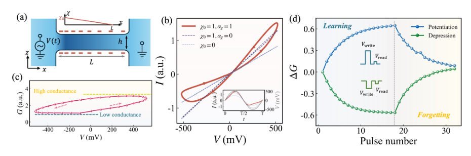
<figcaption class="paper-figure-caption"><b>Fig 1.</b> FIG. 1. (a) Schematic of the planar nanochannel. (b) Simulated current–voltage characteristics for an uncharged channel (χ0 = 0), a uniform surface charge (χ0 = 1, αχ = 0) and a surface charge gradient (χ0 = 1, αχ = 1). (c) G −V characteristics, showing hysteretic switching between low- and high-conductance states. (d) Synaptic behaviors of the memristor.</figcaption>
</figure>
<figure class="paper-figure-card">
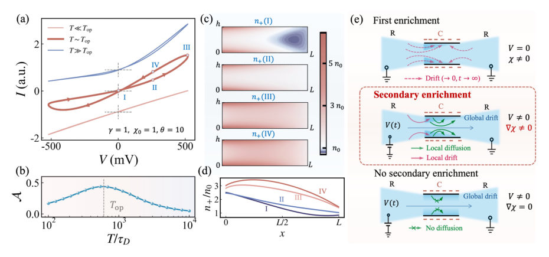
<figcaption class="paper-figure-caption"><b>Fig 2.</b> FIG. 2. (a) The frequency-dependent I–V loops. (b) The hysteresis area as a function of the period of V (t) (c) Snapshots of cation distributions. (d) The cation density profile n+(x) = 1</figcaption>
</figure>
<figure class="paper-figure-card">
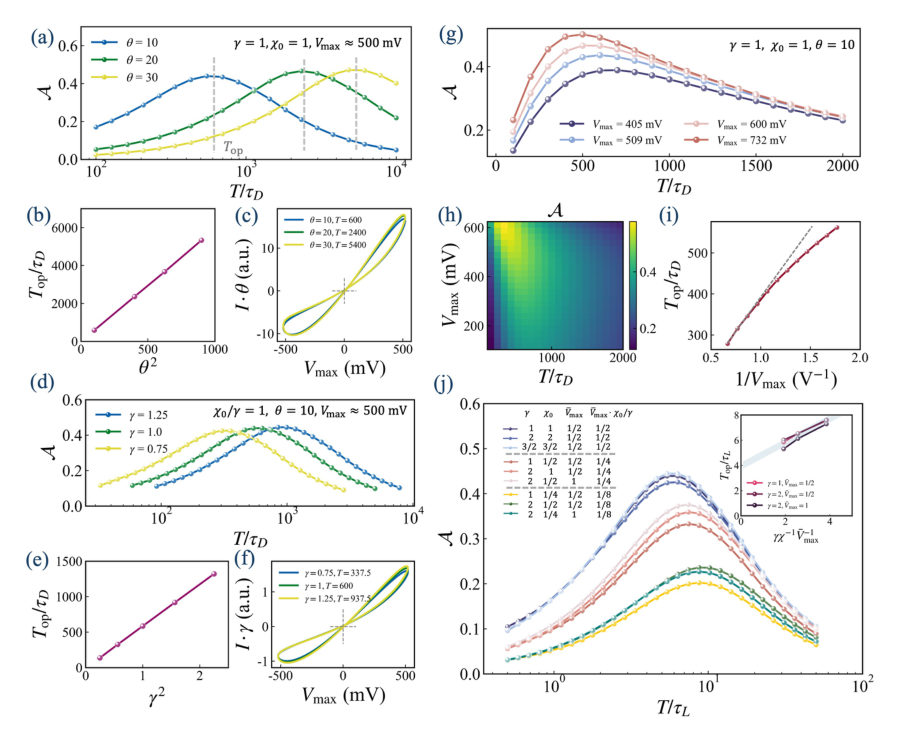
<figcaption class="paper-figure-caption"><b>Fig 3.</b> FIG. 3. Memristive characteristics over the entire parameter space. (a) A(T) at different θ. (b) The linear relationship between Top and θ2. (c) The I–V loops at different θ. (d) A(T) at different γ. (e) The linear relationship between Top and γ2. (f) The I–V loops at different γ. (g) A(T) at different Vmax. (h) The mapping of A(T, Vmax). (i) Top as a function of 1/Vmax. (j) Top at different combinations of γ, χ0, Vmax. The inset shows Top as a function of the product of γ, χ−1 0 , V −1 max.</figcaption>
</figure>
<figure class="paper-figure-card">

<figcaption class="paper-figure-caption"><b>Fig 4.</b> FIG. 4. Generalization to arbitrary surface-charge configurations. (a) Representative spatial distributions of the surface charge χ(x). (b,c) Corresponding I–V characteristics for the different surface charge configurations. (d,e) A(T) for the corresponding surface-charge configurations. (f) Maximum hysteresis area Amax as a function of the first spatial moment of the surface charge.</figcaption>
</figure>
</div>

<p><strong>Summary.</strong> This work theoretically proposes planar nanofluidic memristors that utilize ion transport in nanochannels to achieve memory effects. By employing the Poisson-Nernst-Planck framework, the authors show that a surface charge gradient is key to generating hysteresis. The results provide a quantitative design method based on controlling the spatial pattern of surface charge.</p>
<p><strong>Why it may be interesting.</strong> While focused on solid-state devices, the underlying physics—non-equilibrium ion transport, diffusion-mediated memory effects, and the use of continuum equations (PNP)—shares mathematical parallels with modeling charge dynamics in quantum systems or complex electrochemical interfaces.</p>
<details>
<summary>Detailed structure</summary>
<p><strong>Main problem.</strong> The paper addresses the theoretical design and optimization of planar nanofluidic memristors by exploiting ion transport mechanisms.</p>
<p><strong>Main result.</strong> Memristive behavior can be achieved using a surface charge gradient, and the memory effect is shown to be governed by the first-order moment of the surface charge, providing a design rule.</p>
<p><strong>Method.</strong> The study employs the Poisson-Nernst-Planck (PNP) framework, solving the coupled partial differential equations numerically to analyze ion dynamics.</p>
<p><strong>Model / system.</strong> The physical system is a planar nanochannel where ion transport dictates the memristive switching behavior. The model uses the PNP equations to describe ionic fluxes, potential, and concentration changes.</p>
<p><strong>Key observables.</strong> Hysteretic I-V loops, memory area (A), characteristic memory time (T_op), and the first-order moment of the surface charge (M_chi).</p>
<p><strong>Important parameters / regimes.</strong> Channel height ($\gamma$), relative length ($    heta$), surface charge density ($\chi$), and the ratio of diffusion time to drift time.</p>
<p><strong>Assumptions / limitations.</strong> The analysis neglects fluidic convection (electro-osmosis) and assumes ideal boundary conditions like strong reservoirs and blocking walls.</p>
<p><strong>Figures summary.</strong> Figures illustrate simulated I-V curves showing hysteresis onset with surface charge gradients, and plots demonstrate the dependence of memory area and characteristic time on various physical parameters.</p>
<p><strong>Paper structure.</strong> The paper establishes the PNP model, analyzes the conditions for memristive switching (requiring a surface charge gradient), derives the relationship between memory effect and the first moment of surface charge, and finally provides scaling laws for the characteristic memory time.</p>
</details>
<details>
<summary>Abstract</summary>
<p>Nanofluidic memristors, exploiting ion transport in nanochannels, hold promise for neuromorphic applications. A planar architecture is particularly desired for scalable integration with established micro- and nanofabrication technologies. Here, using the Poisson-Nernst-Planck framework, we theoretically propose planar nanofluidic memristors enabled by surface charge gradient, providing an alternative to the commonly used geometrically asymmetric architectures. The resulting memristive behavior is governed by a diffusion-mediated secondary enrichment effect. By systematically solving the PNP equations, we obtain the scaling of the characteristic memory time across the parameter space. We also reveal that the memory effect is related to the first-order moment of surface charge, for arbitrary charge profiles. These results provide a theoretical basis for rationally designing and optimizing planar nanofluidic memristors through spatially patterned surface charge.</p>
</details>
<p><sub><a href="#top">↑ back to top</a></sub></p>

<p><a id="paper-2608.21086"></a></p>
<h3 id="saturable-nonlinear-schrodinger-equation-with-space-and-time-dependent-variable-coefficients"><a href="http://arxiv.org/abs/2608.21086v1">Saturable nonlinear Schrödinger equation with space- and time-dependent variable coefficients</a></h3>
<p><strong>Authors:</strong> Maurilho R. da Rocha, Mateus C. P. dos Santos, Wesley B. Cardoso<br>
<strong>Type:</strong> theory · <strong>Category:</strong> other · <strong>PDF:</strong> <a href="https://arxiv.org/pdf/2608.21086v1">https://arxiv.org/pdf/2608.21086v1</a><br>
<strong>Analysis basis:</strong> full PDF text, analyzed in chunks
<strong>Topic relevance:</strong> <code>Keldysh / 2PI / non-Gaussian methods</code> <strong>2/5</strong> · <code>analog quantum simulation</code> <strong>2/5</strong> · <code>driven-dissipative phase transition</code> <strong>2/5</strong> · <code>methods for driven-dissipative</code> <strong>2/5</strong> · <code>non-equilibrium universality</code> <strong>1/5</strong></p>
<div class="figure-strip-hint">↔ Scroll figures horizontally</div>
<div class="paper-figures-scroll">
<figure class="paper-figure-card">

<figcaption class="paper-figure-caption"><b>Fig 1.</b> Figure 2. Solution profile |ψ|2 as a function of the coordinates x and t for the case with a static potential, using the variational solutions obtained with the coefficient choices: (a) (A−, B−) with E = −0.1 and (b) (A+, B+) with E = 0.4. The other parameter values used were G = 1.0, Γ = 0.1, and b = 2.0.</figcaption>
</figure>
<figure class="paper-figure-card">

<figcaption class="paper-figure-caption"><b>Fig 2.</b> Figure 1. Real part of the eigenvalue λ as a function of E, ob- tained numerically from the variational solution (20), consid- ering the parameters (a) (A−,B−) and (b) (A+,B+) from Eqs. (24) and (25), respectively. The other parameter values used here were: G = 1.0, Γ = 0.1, and b = 2.0.</figcaption>
</figure>
<figure class="paper-figure-card">

<figcaption class="paper-figure-caption"><b>Fig 3.</b> Figure 3. Solution profile |ψ|2 as a function of the coordinates x and t for the case with a seesaw potential, using the variational solutions obtained with the coefficient choices: (a) (A−, B−) with E = −0.1 and (b) (A+, B+) with E = 0.4. The other parameter values used were G = 1.0, Γ = 0.1, b = 2.0, and w0 = 0.5.</figcaption>
</figure>
<figure class="paper-figure-card">

<figcaption class="paper-figure-caption"><b>Fig 4.</b> Figure 4. Solution profile |ψ|2 as a function of the coordinates x and t for the case with a flying-bird potential (41), using the variational solutions obtained with the coefficient choices: (a) (A−, B−) with E = −0.1 and (b) (A+, B+) with E = 0.4. The other parameter values used were G = 1.0, Γ = 0.1, b = 2.0, σ = 0.25, and w0 = 0.5.</figcaption>
</figure>
<figure class="paper-figure-card">

<figcaption class="paper-figure-caption"><b>Fig 5.</b> Figure 5. Solution profile |ψ|2 as a function of the coordinates x and t for the case with a mixed potential (47), using the variational solutions obtained with the coefficient choices: (a) (A−, B−) with E = −0.1 and (b) (A+, B+) with E = 0.4. The other parameter values used were G = 1.0, Γ = 0.1, b = 2.0, σ = 0.25, and w0 = 0.5.</figcaption>
</figure>
</div>

<p><strong>Summary.</strong> This paper analyzes the stability and dynamics of localized wave packets governed by a saturable nonlinear Schrödinger equation with time- and space-dependent coefficients. Using variational methods and numerical simulations, the authors demonstrate that the stability of these structures is critically dependent on the modulation parameters. The findings offer crucial insights for controlling nonlinear wave phenomena in physical media.</p>
<p><strong>Why it may be interesting.</strong> This work is highly relevant to AMO physics and quantum optics as the NLS equation is a canonical model for describing nonlinear wave propagation in systems like optical waveguides and Bose-Einstein condensates.</p>
<details>
<summary>Detailed structure</summary>
<p><strong>Main problem.</strong> The study investigates the dynamics and stability of localized solutions within a saturable nonlinear Schrödinger equation featuring space- and time-dependent variable coefficients.</p>
<p><strong>Main result.</strong> The stability of the localized solutions is found to be highly sensitive to the modulation parameters, leading to the emergence of alternating stable and unstable regions.</p>
<p><strong>Method.</strong> The research employs a combination of variational approaches, similarity transformations to achieve autonomous forms, and linear stability analysis via an eigenvalue problem, supplemented by direct numerical simulations.</p>
<p><strong>Model / system.</strong> The core model is the saturable nonlinear Schrödinger equation (NLS) with the general form $i\psi_t = -rac{1}{2}\psi_{xx} + V(x, t)\psi + g(x, t)|\psi|^2\psi + \gamma(x, t)|\psi|^2$. The analysis explores various non-autonomous potentials, including static, seesaw, flying-bird, and mixed potentials.</p>
<p><strong>Key observables.</strong> Stability (determined by the sign of the eigenvalue $\lambda$), maximum amplitude ($h_{	ext{max}}$), and mean width ($\langle x^2 
angle$).</p>
<p><strong>Important parameters / regimes.</strong> Modulation parameters (e.g., modulation frequency $\omega_0$, and parameters $\sigma$ used in potentials), and variational parameters $A$ and $B$.</p>
<p><strong>Assumptions / limitations.</strong> The variational method relies on a Taylor series expansion for the logarithmic term, and the stability analysis for the autonomous case is separate from the full non-autonomous system.</p>
<p><strong>Figures summary.</strong> Figures illustrate the real part of the eigenvalue $\lambda$ vs. energy $E$ for the autonomous case, and show the evolution of $h_{	ext{max}}$ and $\langle x^2 
angle$ for various modulation potentials (static, seesaw, flying-bird, mixed) as a function of modulation frequency $\omega_0$.</p>
<p><strong>Paper structure.</strong> The paper progresses by first establishing the general NLS model and applying variational/similarity techniques to derive an autonomous form. It then analyzes stability using eigenvalue problems and concludes with direct numerical simulations testing various time-dependent potentials to map out stability regimes.</p>
</details>
<details>
<summary>Abstract</summary>
<p>In this paper we study the dynamics and stability of localized solutions in a saturable nonlinear Schrödinger equation with space- and time-dependent variable coefficients. Using a variational approach and numerical simulations, we analyze the effects of different external potential configurations. Our results reveal that the stability of the solutions is highly sensitive to the modulation parameters, leading to the emergence of alternating stable and unstable regions as a function of the modulation frequency. These findings provide valuable insights into the control of localized structures in nonlinear wave systems, with potential implications for optical waveguides, Bose-Einstein condensates, and other nonlinear media.</p>
</details>
<p><sub><a href="#top">↑ back to top</a></sub></p>

<p><a id="paper-2608.20939"></a></p>
<h3 id="interedge-backscattering-in-quantum-spin-hall-based-ns-and-sns-junctions"><a href="http://arxiv.org/abs/2608.20939v1">Interedge backscattering in quantum spin Hall-based NS and SNS junctions</a></h3>
<p><strong>Authors:</strong> Cajetab Heinz, Patrik Recher, Fernando Dominguez<br>
<strong>Type:</strong> theory · <strong>Category:</strong> other · <strong>PDF:</strong> <a href="https://arxiv.org/pdf/2608.20939v1">https://arxiv.org/pdf/2608.20939v1</a><br>
<strong>Analysis basis:</strong> full PDF text, analyzed in chunks
<strong>Topic relevance:</strong> <code>interference shaping light</code> <strong>2/5</strong> · <code>Keldysh / 2PI / non-Gaussian methods</code> <strong>1/5</strong> · <code>analog quantum simulation</code> <strong>1/5</strong> · <code>driven-dissipative phase transition</code> <strong>1/5</strong> · <code>methods for driven-dissipative</code> <strong>1/5</strong></p>
<div class="figure-strip-hint">↔ Scroll figures horizontally</div>
<div class="paper-figures-scroll">
<figure class="paper-figure-card">

<figcaption class="paper-figure-caption"><b>Fig 1.</b> FIG. 1. (a) Schematic of a QSH/barrier/superconductor junc- tion. In the barrier, electrons can undergo local Andreev reflection (1) or undergo normal reflection to the opposite edge (2). Red (blue) dots and solid (dashed) lines represent electrons (holes). (b) Conductance G as a function of bias voltage eV for uncoupled (blue solid line) and coupled (red dashed line) top and bottom QSH edges. (c) Schematic of a superconductor/barrier/QSH/barrier/superconductor junc- tion with phase difference φ between the superconductors. (d) Andreev bound state energies E as a function of φ for un- coupled (blue solid line) and coupled (red dashed line) edges.</figcaption>
</figure>
<figure class="paper-figure-card">

<figcaption class="paper-figure-caption"><b>Fig 2.</b> FIG. 2. (a) Energy spectrum E(ky) of a QSH/barrier/QSH junction with Cn = −4 meV, Cb = −20 meV, and Lb/a = 11. (b) Energy spectrum E(ky) of a QSH/barrier/SC junction with Cn = −4 meV, Cb = 19 meV, Cs = 20 meV, Lb/a = 5, and Ms = 10 meV. (c) Conductance G as a function of the junction width W for different values of the superconducting pairing amplitude ∆0. Solid lines show the numerical results, while dashed lines indicate fits based on Eq. (15). (d) Con- ductance G as a function of the chemical potential Cs in the superconductor and the barrier chemical potential Cb, with ∆0 = 0.15 meV, W/a = 200 and Lb/a = 5. The white lines represent the onset of the bulk bands.</figcaption>
</figure>
<figure class="paper-figure-card">

<figcaption class="paper-figure-caption"><b>Fig 3.</b> FIG. 3. (a) Zero-bias conductance G versus junction width W for several disorder strengths λ. Solid lines are numerical results, dashed lines fits to Eqs. (14)-(16). (b) Conductance normalized to its zero-field value, G(B)/G(0), versus mag- netic field B for several barrier lengths Lb. (c) G versus bias voltage eV for several λ. (d) Half width at half maximum σ of the zero-bias peak in (c) versus λ, for Lb/a = 3 . . . 30. Un- less stated otherwise, Lb/a = 5, W/a = 150, eV = 0, B = 0, ∆0 = 0.15 meV. All curves are averaged over 100 disorder realizations, with the same set of realizations used for every parameter value.</figcaption>
</figure>
<figure class="paper-figure-card">

<figcaption class="paper-figure-caption"><b>Fig 4.</b> FIG. 4. SNS junction: (a) Gap openings at φ = 0 and φ = π, denoted by δ0 and δπ, as a function of the chemical potential Cn for Lb = 5a. (b) Corresponding SQI patterns evaluated at the values of Cn indicated by the dashed lines in panel (a). (c) SQI patterns for values of Cn in the conduction band, again for Lb = 5a. In this panel, all curves are normalized to unity and vertically offset for clarity.</figcaption>
</figure>
<figure class="paper-figure-card">

<figcaption class="paper-figure-caption"><b>Fig 5.</b> FIG. 5. Disorder-averaged critical current Ic versus the mag- netic flux Φ obtained from the scattering network model. The solid blue curve corresponds to independently randomized ef- fective transmissions Teff,L/R and phase Ψ. For the dashed red line Teff,L/R are fixed and only Ψ is randomized. For the green dashed line Teff,L/R are randomized and Ψ is fixed. Here, x ∼U[a, b) means that x is drawn uniformly at random from the interval [a, b) Each curve is averaged over 1000 dis- order configurations.</figcaption>
</figure>
</div>

<p><strong>Summary.</strong> This theoretical work models how opposite helical edge states in QSH insulators couple when interfaced with superconductors. By analyzing transport signatures like zero-bias conductance and superconducting gap structures, the authors map out the microscopic parameters—such as barrier geometry and mismatch—that control this interedge coupling. This provides crucial insight into the functionality of topological superconducting hybrid devices.</p>
<p><strong>Why it may be interesting.</strong> The detailed control over superconducting signatures (gaps, interference patterns) via microscopic edge coupling mechanisms provides a rich platform for studying proximity effects and superconducting quantum interference in topological materials.</p>
<details>
<summary>Detailed structure</summary>
<p><strong>Main problem.</strong> The paper investigates the microscopic conditions governing the coupling between opposite helical edge states in Quantum Spin Hall (QSH) insulators when they form hybrid junctions with superconductors (NS and SNS).</p>
<p><strong>Main result.</strong> Interedge coupling causes measurable deviations from quantized conductance values in NS junctions and opens characteristic gaps at $\varphi=0$ and $\varphi=\pi$ in the Andreev bound state spectrum of SNS junctions.</p>
<p><strong>Method.</strong> The study employs the Bogoliubov-de Gennes formalism combined with a tight-binding approach to model transport properties and superconducting gap structures.</p>
<p><strong>Model / system.</strong> The system models QSH edge states coupled to superconducting leads, analyzed using a microscopic Bernevig-Hughes-Zhang model. The analysis covers both zero-bias conductance measurements (NS) and the superconducting phase dependence of Andreev bound states (SNS).</p>
<p><strong>Key observables.</strong> Zero-bias Andreev conductance ($G$), Andreev Bound State (ABS) energies ($E$ vs. $\varphi$), and the Superconducting Quantum Interference (SQI) pattern.</p>
<p><strong>Important parameters / regimes.</strong> Barrier gap, interface transparency, orbital/Fermi-velocity mismatch, disorder strength ($\lambda$), and superconducting phase difference ($\varphi$).</p>
<p><strong>Assumptions / limitations.</strong> Simplifications include neglecting spin-nonconserving terms (like Rashba SOC) and using effective scatterer models for transport calculations.</p>
<p><strong>Figures summary.</strong> Figures illustrate schematic junctions, conductance vs. width/bias plots, and energy spectra showing gap openings dependent on the superconducting phase difference $\varphi$.</p>
<p><strong>Paper structure.</strong> The paper systematically analyzes the physics in NS junctions (conductance deviations) and then extends the analysis to SNS junctions (gap opening and SQI modification), incorporating effects of disorder and geometric parameters.</p>
</details>
<details>
<summary>Abstract</summary>
<p>We investigate the microscopic conditions that allow for the coupling between opposite quantum spin Hall (QSH) edges in hybrid junctions with superconductors. Using a microscopic Bernevig--Hughes--Zhang model and the Bogoliubov--de Gennes formalism, we model a potential barrier along the NS interface and identify the parameter regimes in which the QSH edges are coupled. In normal--superconductor junctions, such coupling manifests as deviations from the quantized zero-bias Andreev conductance $G=4e^2/h$. These deviations are controlled by the induced gap in the barrier, the barrier geometry, the interface transparency, orbital and Fermi-velocity mismatch, and disorder strength as well as the bias voltage leading to a zero-bias peak. We then analyze the impact of this interedge-coupling mechanism in Josephson junctions at equilibrium and show that it hybridizes the edge-resolved Andreev branches, opens gaps at the time-reversal-invariant phase differences $\varphi=0$ and $\varphi=π$, and modifies the superconducting quantum interference pattern. In a reflection-symmetric geometry, the relative sizes of the two gap openings provide complementary information about the interedge dynamical phase, which also determines the parity of the suppressed lobes in the magnetic interference pattern. This investigation sheds light on the microscopic details that control the coupling of helical edge states in actual devices and the resulting consequences for superconducting hybrid systems.</p>
</details>
<p><sub><a href="#top">↑ back to top</a></sub></p>

<p><a id="paper-2608.20863"></a></p>
<h3 id="long-lived-laughlin-pairs-in-a-depleted-quantum-hall-edge-channel"><a href="http://arxiv.org/abs/2608.20863v1">Long-lived Laughlin pairs in a depleted quantum Hall edge channel</a></h3>
<p><strong>Authors:</strong> Girts Barinovs, Agris Buzs, Vyacheslavs Kashcheyevs<br>
<strong>Type:</strong> theory · <strong>Category:</strong> strongly correlated electrons · <strong>PDF:</strong> <a href="https://arxiv.org/pdf/2608.20863v1">https://arxiv.org/pdf/2608.20863v1</a><br>
<strong>Analysis basis:</strong> full PDF text, analyzed in chunks
<strong>Topic relevance:</strong> <code>Keldysh / 2PI / non-Gaussian methods</code> <strong>2/5</strong> · <code>methods for driven-dissipative</code> <strong>2/5</strong> · <code>analog quantum simulation</code> <strong>1/5</strong> · <code>correlated / nonlocal dissipation</code> <strong>1/5</strong></p>
<div class="figure-strip-hint">↔ Scroll figures horizontally</div>
<div class="paper-figures-scroll">
<figure class="paper-figure-card">

<figcaption class="paper-figure-caption"><b>Fig 1.</b> FIG. 1. Magnetic binding and destabilization of Laughlin pairs. (a) In a flat external potential, relative drift motion of two electrons in their lowest-Landau-level state is quantized and samples the repulsive Coulomb interaction Vee(r) (green curve) at discrete energy levels Em. The odd-m sequence relevant to spin-polarized electrons is shown; its positive energies decrease towards the separated-electron limit as the pair radius r grows. (b) Schematic cut of the relative-motion potential along the stable principal axis, rx = 0, when an external electric-field gradient is present. The Coulomb and quadratic contributions as functions of ry are shown by dashed curves. Their...</figcaption>
</figure>
<figure class="paper-figure-card">

<figcaption class="paper-figure-caption"><b>Fig 2.</b> FIG. 2. Dimensionless energies εm = Em/EC of quasi- bound Laughlin pairs in a purely quadrupole (κ = 1) elec- tric field gradient in the LLL approximation. No resonances are present below the threshold energy εth = (3/2)χ1/3 (or- ange line). Numerical results obtained by the complex-scaling method (black line) agree well with the second-order pertur- bation theory (blue line), Eq. (16). Horizontal lines mark the unperturbed energies ε(0) m of pairs in the bulk. The inset shows a magnified view of the m = 1 state near the threshold and the diamond indicates the energy of the pair state observed in the time-dependent wave-packet calculation (see Section V below).</figcaption>
</figure>
<figure class="paper-figure-card">

<figcaption class="paper-figure-caption"><b>Fig 3.</b> FIG. 3. Dimensionless resonance halfwidths, scaled as γm/χ, for pure-quadrupole anisotropy κ = 1, plotted as functions of A1χ−2/3 on the lower axis. Solid black curves are nu- merical complex-scaling results for the odd-m branches in- dicated by the labels; dashed black curves show the even-m branches. Blue curves show the closed-form tunneling esti- mate in Eq. (18) for the odd-m branches. The upper axis gives the corresponding parameter combination for GaAs de- vices.</figcaption>
</figure>
<figure class="paper-figure-card">

<figcaption class="paper-figure-caption"><b>Fig 4.</b> FIG. 4. Husimi density of Laughlin-pair resonances at a symmetric saddle-point potential, κ = 1. Panels (a) and (b) show the m = 1 branch at ¯mmax = 1.5 and 3.5, respectively; panels (c) and (d) show the m = 3 branch at ¯mmax = 3.5 and 4.5. The corresponding resonance energies are printed above the panels. Blue shading shows Q(z), and the solid contour levels are chosen to be equally spaced for a Gaussian profile. Crosses mark its zeros. The dashed curves are the classical critical level at ε = εth, separating the closed central trajectories from the incoming and outgoing branches. The better-confined states in panels (b) and (d) retain an approximately bulk-like distribution, modified by...</figcaption>
</figure>
<figure class="paper-figure-card">

<figcaption class="paper-figure-caption"><b>Fig 5.</b> FIG. 5. Formation of a Laughlin-pair resonance in a collision of two electrons. The panels show the relative-coordinate probability density |ψ(r, t)|2 (blue shading and contours) at dimensionless times τ = t EC/ℏ= 0, 11, 24, 32, 40, 53, 62, and 242 in panels (a)–(h), respectively. Each panel is normalized independently to its own density maximum. Crosses mark isolated zeros of the wave function. In panel (a) their straight-line arrangement is calculated analytically in the LLL limit from the antisymmetrized initial Gaussian state; in the later panels the zeros are obtained numerically. The dashed curves are the exact critical level lines at ε = εth. In the central region they go around the...</figcaption>
</figure>
</div>

<p><strong>Summary.</strong> This paper develops a microscopic theory to predict the existence and stability of Laughlin pairs—repulsively bound electron pairs—within quantum Hall edge channels. By analyzing the two-electron Hamiltonian using advanced techniques like complex scaling, the authors show that these pairs can be stabilized by the geometry of the confining potential. The results suggest that such correlated, anyonic excitations are potentially observable using current single-electron circuit technology.</p>
<p><strong>Why it may be interesting.</strong> This work bridges concepts from strongly correlated electron physics (Laughlin states) with mesoscopic quantum transport, providing concrete, calculable predictions for observing exotic correlated states in solid-state devices.</p>
<details>
<summary>Detailed structure</summary>
<p><strong>Main problem.</strong> The study investigates the possibility of electron-electron repulsion driving quantized relative circulation, enabling two electrons to propagate together as a positive-energy Laughlin pair in a depleted quantum Hall edge channel.</p>
<p><strong>Main result.</strong> The theory predicts that existing GaAs devices may already support the lowest spin-polarized Laughlin pair with a lifetime significantly longer than typical propagation times, suggesting experimental feasibility.</p>
<p><strong>Method.</strong> The authors developed a microscopic theory using the physical two-electron Hamiltonian, employing complex scaling, analytic tunneling theory, and simulating dynamics with the full finite-field Hamiltonian.</p>
<p><strong>Model / system.</strong> The system is a depleted quantum Hall edge channel where two interacting electrons are confined. The analysis uses the physical two-electron Hamiltonian projected onto the Lowest Landau Level (LLL) to model the correlated dynamics.</p>
<p><strong>Key observables.</strong> Dissociation threshold, decay rates, quasibound resonance energies ($\epsilon_m - i\gamma_m$), and the pair's lifetime ($   au$).</p>
<p><strong>Important parameters / regimes.</strong> The stability depends on the electric-field gradient tensor ($\hat{V}$) and the ratio of Coulomb energy to characteristic energy scales.</p>
<p><strong>Assumptions / limitations.</strong> The analysis involves local approximations of the potential (up to quadratic order) and assumes the collision pathway survives full two-dimensional dynamics.</p>
<p><strong>Figures summary.</strong> Figure 1 schematically shows how the external electric-field gradient leads to quasibound resonances whose lifetimes depend on the distance from the dissociation threshold.</p>
<p><strong>Paper structure.</strong> The paper progresses from establishing the physical model and the theoretical framework for quasibound pairs to developing quantitative tools (complex scaling, tunneling theory) and concluding with simulations demonstrating pair creation and propagation.</p>
</details>
<details>
<summary>Abstract</summary>
<p>On-demand sources and mesoscopic beam splitters allow individual ballistic electrons to collide in depleted quantum Hall edge channels, where their unscreened Coulomb interaction acts as a strong, controllable nonlinearity. Theory suggests a more striking possibility: in a strong magnetic field, the repulsion can drive quantized relative circulation, allowing two electrons to propagate together as a positive-energy Laughlin pair. The relevance of such pairs to experiment depends on quantitative lifetimes in realistic guiding potentials and on whether the proposed collision pathway to pair formation survives full two-dimensional dynamics. We develop a microscopic theory of quasibound Laughlin pairs using the physical two-electron Hamiltonian. For a general local electric-field gradient, we determine the dissociation threshold, number of quasibound states, and decay rates. Complex scaling and analytic tunneling theory show that lifetimes grow exponentially with pair energy above threshold. Applied to reported GaAs parameters, the theory indicates that existing devices may already support the lowest spin-polarized pair, with a leading lifetime estimate about three orders of magnitude longer than typical propagation times. We simulate a collision with the full finite-field Hamiltonian, demonstrating both a framework for nonlinear two-electron quantum dynamics and the creation of a Laughlin pair in a representative two-electron collision. We use Husimi distributions and their zeros to visualize both quasibound resonances and transient collision states in phase space. These results place the preparation, propagation, and detection of repulsively paired electrons within reach of existing single-electron circuit technology. They identify kinematic stabilization under constrained one-dimensional propagation as a pairing mechanism that may extend to anyonic quantum Hall edge excitations.</p>
</details>
<p><sub><a href="#top">↑ back to top</a></sub></p>

<p><a id="paper-2608.20979"></a></p>
<h3 id="polymer-genome-in-the-age-of-artificial-intelligence"><a href="http://arxiv.org/abs/2608.20979v1">Polymer Genome in the Age of Artificial Intelligence</a></h3>
<p><strong>Authors:</strong> Jifeng Wang, Ying Wang<br>
<strong>Type:</strong> theory · <strong>Category:</strong> disordered systems and neural networks · <strong>PDF:</strong> <a href="https://arxiv.org/pdf/2608.20979v1">https://arxiv.org/pdf/2608.20979v1</a><br>
<strong>Analysis basis:</strong> full PDF text, analyzed in chunks
<strong>Topic relevance:</strong> <code>analog quantum simulation</code> <strong>2/5</strong> · <code>methods for driven-dissipative</code> <strong>2/5</strong> · <code>Keldysh / 2PI / non-Gaussian methods</code> <strong>1/5</strong></p>
<div class="figure-strip-hint">↔ Scroll figures horizontally</div>
<div class="paper-figures-scroll">
<figure class="paper-figure-card">

<figcaption class="paper-figure-caption"><b>Fig 1.</b> Figure 1. Overview of representative polymer databases21-26, 28, 30, 31. (a) Comparison of data coverage and features among main polymer databases in the field. “Properties” indicates whether the database includes experimental or computational property data; “SMILES” denotes the availability of polymer structures encoded as SMILES strings; “Permission” reflects the degree of data accessibility; and “Data Type” distinguishes experimentally measured (“Exp”), theoretically calculated (“Cal”), and virtually generated (“Gen”) data. (b) Distribution of polymer types and property data points in the PolyInfo database. (c) Principal component analysis (PCA) projection of reactants and polymers from...</figcaption>
</figure>
<figure class="paper-figure-card">

<figcaption class="paper-figure-caption"><b>Fig 2.</b> Figure 2. Polymer encoding strategies for property prediction and generation. (a) Encoding of homopolymers. Common structural representations used in predictive and generative modeling, including repeat-unit–based fingerprints, 2D/3D molecular graphs, SMILES sequence, and SMILES one-hot encodings. (b–d) Encoding of copolymers. (b) Copolymer fingerprints generated by combining monomer fingerprints according to their molar ratios. (c) When the copolymer sequence is known, 2D molecular graph encoding can be employed to capture interunit connectivity. (d) When</figcaption>
</figure>
<figure class="paper-figure-card">

<figcaption class="paper-figure-caption"><b>Fig 3.</b> Figure 3. Overview of AI models for polymer property prediction. (a) Traditional machine learning workflow. Polymer structures are represented by SMILES-derived fingerprints or hand-crafted descriptors, followed by property prediction using models such as XGBoost or MLP. (b) Graph neural network (GNN) models. Polymers are encoded as graphs defined by node features and edge indices representing monomer connectivity. (c) Transformer-based models. Sequence inputs (e.g., SMILES of repeating unit) are tokenized and processed through a multi-head attention mechanism to learn inter- sequence correlations for property prediction. (d) Data augmentation under limited datasets. Group contribution...</figcaption>
</figure>
<figure class="paper-figure-card">

<figcaption class="paper-figure-caption"><b>Fig 4.</b> Figure 4. Representative generative models for polymer design. (a) Variational Autoencoder (VAE). Encodes polymers into a continuous latent space, where new structures are generated by sampling latent vectors and decoding them into valid representations. (b) Denoising Diffusion Probabilistic Model (DDPM). Consists of a forward diffusion process (curved arrow) adding noise and a reverse denoising process (straight arrow) that gradually reconstructs polymer structures from Gaussian noise. (c) Transformer-based model. Learns polymer sequence representations and generates polymers through autoregressive decoding.</figcaption>
</figure>
<figure class="paper-figure-card">

<figcaption class="paper-figure-caption"><b>Fig 5.</b> Figure 5. Applications of variational autoencoders (VAEs) in polymer generation. (a) Schematic illustration of the working principle of a VAE. (b) Graph-based encoding of polymer repeating units, represented using node and adjacency matrices derived from SMILES strings. (c) Generation of polymers with diverse topological architectures using the TopoGNN framework. (d–e) Comparison between predicted and simulated structural or property values for TopoGNN-generated polymers. (f) Multiple 3D conformations generated by polyGen for the same polymer repeating unit. Panel (c–e) reproduced from ref. 63 under the CC BY-NC-ND 4.0 license; Panel (f) reproduced from ref. 64 under the CC BY 4.0 license.</figcaption>
</figure>
</div>

<p><strong>Summary.</strong> This paper reviews the state-of-the-art in using Artificial Intelligence to advance polymer science, focusing heavily on the crucial role of molecular encoding strategies. It compares fingerprint, graph, and sequence-based representations for tasks like property prediction and inverse design. The work stresses that standardized, comprehensive databases and better encoding are necessary to move polymer discovery from empirical to AI-driven innovation.</p>
<p><strong>Why it may be interesting.</strong> While focused on polymers, the core methodology—applying advanced ML/AI (GNNs, Transformers, LLMs) to complex, high-dimensional structural data—is highly relevant to modeling quantum many-body systems or disordered quantum materials.</p>
<details>
<summary>Detailed structure</summary>
<p><strong>Main problem.</strong> The field of AI-driven polymer science is lagging due to the structural complexity of polymers, requiring better encoding strategies for AI models.</p>
<p><strong>Main result.</strong> The paper provides a critical review and practical guidance on leveraging advanced AI techniques for polymer design, emphasizing the need for standardized, multi-scale data.</p>
<p><strong>Method.</strong> The authors critically examine various AI encoding strategies (Fingerprint, Graph, Sequence) and model architectures (GNNs, Transformers, LLMs) applied to polymer property prediction and inverse design.</p>
<p><strong>Model / system.</strong> The physical system is polymers (homopolymers, copolymers, blends). The models involve deep learning architectures like Graph Neural Networks (GNNs) and Transformers, operating on molecular representations.</p>
<p><strong>Key observables.</strong> Polymer properties such as glass transition temperature ($T_g$), mechanical strength, and electronic/dielectric properties.</p>
<p><strong>Important parameters / regimes.</strong> Polymerization degree, structural connectivity (2D/3D graphs), and chemical composition.</p>
<p><strong>Assumptions / limitations.</strong> The choice of encoding must align with data availability and the structural complexity of the polymer system.</p>
<p><strong>Figures summary.</strong> Figure 1 compares polymer databases based on data coverage and property inclusion; Table 1 summarizes common encoding strategies (Fingerprint, Graph, Sequence) for various tasks.</p>
<p><strong>Paper structure.</strong> The paper progresses by first identifying the gap in AI application to polymers, then detailing the evolution and comparison of encoding strategies, evaluating model applicability in property prediction and inverse design, and concluding with recommendations for data infrastructure.</p>
</details>
<details>
<summary>Abstract</summary>
<p>Artificial intelligence (AI) is redefining the landscape of polymer science. Although numerous AI applications have been introduced in this field, the roles of polymer encoding strategies and different applications of AI models in polymer design remain insufficiently understood. Here, we build upon the foundation of polymer databases to critically examine the performance and applicability of current encoding strategies across different use cases. We then focus on two major AI application domains, property prediction and inverse design, to evaluate the strengths, weaknesses and suitable scenarios for various model architectures. Finally, we emphasize the significance of the online platforms for promoting data accessibility and accelerating the migration from experience-based discovery toward AI-driven innovation in polymer science and engineering. Through these discussions, we aim to provide practical guidance for future research and development in AI-assisted polymer design.</p>
</details>
<p><sub><a href="#top">↑ back to top</a></sub></p>

<p><a id="paper-2608.20560"></a></p>
<h3 id="interband-plasmons-due-to-mexican-hat-dispersion-in-two-dimensional-materials-with-inverted-bands"><a href="http://arxiv.org/abs/2608.20560v1">Interband plasmons due to Mexican hat dispersion in two-dimensional materials with inverted bands</a></h3>
<p><strong>Authors:</strong> Vladimir A. Sablikov<br>
<strong>Type:</strong> theory · <strong>Category:</strong> other · <strong>PDF:</strong> <a href="https://arxiv.org/pdf/2608.20560v1">https://arxiv.org/pdf/2608.20560v1</a><br>
<strong>Analysis basis:</strong> full PDF text, analyzed in chunks
<strong>Topic relevance:</strong> <code>Keldysh / 2PI / non-Gaussian methods</code> <strong>2/5</strong></p>
<div class="figure-strip-hint">↔ Scroll figures horizontally</div>
<div class="paper-figures-scroll">
<figure class="paper-figure-card">

<figcaption class="paper-figure-caption"><b>Fig 1.</b> FIG. 1. MHD for the hybridization parameter 𝑎= 0.2 in the cases (a) of e-h symmetric model, 𝑑= 0, and (b) where the e-h symmetry is broken, 𝑑= −0.8.</figcaption>
</figure>
<figure class="paper-figure-card">

<figcaption class="paper-figure-caption"><b>Fig 2.</b> FIG. 2. Distribution of the interband overlap function F2(𝒌, 𝒌+ 𝒒) in the 𝒌plane for two values of 𝑞: (a) 𝑞= 0.3; (b) 𝑞= 1.2. Calculations were carried out for 𝑎= 0.2.</figcaption>
</figure>
<figure class="paper-figure-card">

<figcaption class="paper-figure-caption"><b>Fig 3.</b> FIG. 3. Map of the surface of the interband energy 𝑤𝒌+𝒒,𝒌and the evolution of JDOSq singularities with changing 𝑞and the e-h asymmetry parameter 𝑑. (a) The case 𝑞= 0, when the interband energy is independent of 𝑑. The dashed line denotes the van Hove singularity on the circle. (b) The case 𝑑= 0 and 𝑞= 0.3. Increasing 𝑞leads to a transformation of the van Hove singularity on the circle into two saddle points and two minima. (c) The case 𝑑= 0 and 𝑞= 1.2. The saddle points and minima shift to the center as 𝑞increases. (d) The case of e-h asymmetry, 𝑑=-0.8, for 𝑞= 0.2. Increasing 𝑞transforms the van Hove singularity on the circle into single saddle point (hereinafter referred to as high-energy...</figcaption>
</figure>
<figure class="paper-figure-card">

<figcaption class="paper-figure-caption"><b>Fig 4.</b> FIG. 5. (a) The distribution of the loss function density in the 𝑞-𝜔 plane in the case of the e-h symmetry. The white line represents the IBP dispersion. The black dashed line is the boundary of the e-h continuum. (b) Line plot of the real (blue solid line) and imaginary (dark yellow line) parts of the dynamical dielectric function as well as the loss function L(𝜔) (green line) for 𝑞= 0.5. The zero of 𝜖𝑅𝑃𝐴(𝜔) (marked with a red circle) represents the plasmon node. The parameters are 𝑎= 0.2, 𝑑= 0, 𝑄= 10.</figcaption>
</figure>
<figure class="paper-figure-card">

<figcaption class="paper-figure-caption"><b>Fig 5.</b> FIG. 6. (a) Dispersion 𝜔𝑝(𝑞) of the IBPs and (b) the decay constant 𝛾(𝑞) in e-h symmetric case. 𝑞𝑙and 𝑞𝑢are the lower and upper boundaries of the wave vector range where the IBPs are excited. 𝜔𝑙is lower frequency and 𝜔𝑡ℎis the threshold energy of interband transitions. The parameters are 𝑎= 0.2, 𝑑= 0, 𝑄= 10.</figcaption>
</figure>
</div>

<p><strong>Summary.</strong> This theoretical study examines interband plasmons in 2D topological materials exhibiting Mexican-hat dispersion. The authors show that this unique band structure significantly enhances plasmon strength and predicts an additional low-frequency plasmon branch when electron-hole symmetry is broken. The results highlight the deep connection between plasmon excitation modes and singularities in the joint density of states.</p>
<p><strong>Why it may be interesting.</strong> The strong coupling between electronic band structure singularities (like Van Hove points) and collective excitations (plasmons) is a core topic in condensed matter theory, relevant for understanding plasmonic responses in novel 2D materials.</p>
<details>
<summary>Detailed structure</summary>
<p><strong>Main problem.</strong> The paper investigates how the unique electronic structure arising from Mexican-hat dispersion (MHD) in 2D topological materials affects the properties of interband plasmons (IBPs).</p>
<p><strong>Main result.</strong> MHD significantly strengthens the plasmons, reduces their damping, and causes the emergence of an additional, low-frequency plasmon branch when electron-hole symmetry is broken.</p>
<p><strong>Method.</strong> The analysis is performed using the Random Phase Approximation (RPA) framework, focusing on calculating the polarization function, the joint density of states (JDOS), and the interband overlap function.</p>
<p><strong>Model / system.</strong> The system is a 2D topological material with inverted bands, modeled using the BHZ Hamiltonian. Key features include double-valued isoenergetic contours and a Van Hove singularity.</p>
<p><strong>Key observables.</strong> Interband plasmon spectrum ($\omega_p(q)$), Joint Density of States ($   ext{JDOS}_q$), and the interband quantum metric.</p>
<p><strong>Important parameters / regimes.</strong> The hybridization parameter $a$, the e-h asymmetry parameter $d$, and the plasmon wave vector $q$.</p>
<p><strong>Assumptions / limitations.</strong> The analysis assumes spatial inversion symmetry and treats spin as a good quantum number; the low-frequency branch analysis is restricted to cases where e-h symmetry is broken.</p>
<p><strong>Figures summary.</strong> Figures illustrate the MHD dispersion in both symmetric and asymmetric cases, and show the calculated plasmon spectra ($\omega_{p1}, \omega_{p2}$) relative to the saddle-point singularity energies ($w_{s1}, w_{s2}$).</p>
<p><strong>Paper structure.</strong> The paper proceeds by detailing the general formalism (Hamiltonian, overlap function, JDOS), analyzing the plasmon spectrum in the e-h symmetric case, and finally addressing the effects and emergence of the additional low-frequency branch when e-h symmetry is broken.</p>
</details>
<details>
<summary>Abstract</summary>
<p>Two-dimensional topological materials with Mexican-hat dispersion exhibit numerous nontrivial features, such as double-valued isoenergetic contours in k-space, strong mixing of electron and hole states, a van Hove singularity in the density of states, and specific quantum geometric properties. We find that, due to these features, Mexican-hat dispersion significantly strengthens interband plasmons, reduces their damping, and gives rise to an additional branch of the plasmon spectrum when electron-hole symmetry is broken. The plasmon spectra are limited to a finite range of the wave vector, the boundaries of which depend on the strength of the electron-electron interaction. We also reveal a relationship between the features of the plasmon spectrum and singularities of the joint density of states with a finite plasmon wave vector q, as well as features of the interband quantum metric, which also depend on q.</p>
</details>
<p><sub><a href="#top">↑ back to top</a></sub></p>

<p><a id="paper-2608.21228"></a></p>
<h3 id="the-continuum-model-for-uniaxially-strained-bilayer-graphene-moire-systems"><a href="http://arxiv.org/abs/2608.21228v1">The Continuum Model for Uniaxially Strained Bilayer Graphene Moiré Systems</a></h3>
<p><strong>Authors:</strong> Tong Liu, X. R. Wang, Jiansheng Wu<br>
<strong>Type:</strong> theory · <strong>Category:</strong> other · <strong>PDF:</strong> <a href="https://arxiv.org/pdf/2608.21228v1">https://arxiv.org/pdf/2608.21228v1</a><br>
<strong>Analysis basis:</strong> full PDF text, analyzed in chunks
<strong>Topic relevance:</strong> <code>analog quantum simulation</code> <strong>2/5</strong></p>
<div class="figure-strip-hint">↔ Scroll figures horizontally</div>
<div class="paper-figures-scroll">
<figure class="paper-figure-card">

<figcaption class="paper-figure-caption"><b>Fig 1.</b> FIG. 1. The structure in real space. (a) The AB-stacked bilayer graphene before stretching; the yellow region inside the black dashed line is the unit cell. (b) The stretched- bilayer structure studied in this paper, where the blue layer is the stretched one. The yellow region is the superlattice, which contains neither AA- nor BA-stacked regions. (c) The larger unit cell we choose in the single layer, containing four atoms A, B, C, and D; the red dashed line marks the unit cell. (d) How the stretching changes the unit cell, where s is the stretch factor.</figcaption>
</figure>
<figure class="paper-figure-card">

<figcaption class="paper-figure-caption"><b>Fig 2.</b> FIG. 2. (a)–(d) Energy band structure given by Eq. (2); (a) and (c) are the band structure at ky = 0, while (b) and (d) show the red band in (a) and (c), respectively. The black dashed box marks the first Brillouin zone. (e) Band structure of the stretched bilayer without the interlayer interaction; the eight bands are given by the four Hamiltonians hsi and h′ si after the change of basis. In our study we only consider the low-energy part, so near the Dirac cone we need only keep the interaction between hs1 and h′ s1, because the other two bands have higher energy. (f) Honeycomb structure of hs1 (black) and h′ s1 (red).</figcaption>
</figure>
<figure class="paper-figure-card">

<figcaption class="paper-figure-caption"><b>Fig 3.</b> FIG. 3. (a) The red dashed rectangle is the first Brillouin zone of the α layer and the blue dashed rectangle is that of the β layer. By applying the three groups of reciprocal lattice vectors Gl,i, we find that the three types of interaction can be regarded as hopping between three groups of Kl,i. For the three K valleys from the same layer, we find that they belong to the same honeycomb structure hs1 or h′ s1, shown by the dotted lines. This also proves the conclusion that the hopping between hs1 and h′ s1 is independent. (b) There are two types of hopping from the α layer to the β layer, and likewise from the β layer to the α layer. Thus we can expand as in the TBLG system and obtain a...</figcaption>
</figure>
<figure class="paper-figure-card">

<figcaption class="paper-figure-caption"><b>Fig 4.</b> FIG. 5. (a), (b) BCD density along the kx direction before and after the special strain factor. (c), (d) BCD density along the ky direction before and after the special strain factor. The Fermi level is 0 meV. We calculate the BCD in this small region for each band.</figcaption>
</figure>
<figure class="paper-figure-card">

<figcaption class="paper-figure-caption"><b>Fig 5.</b> FIG. 4. (a)–(c) Relationship between the Berry curvature and the energy band structure. We find a peak of the Berry curvature where the bands close, and, comparing (a) and (c), that the Berry curvature changes after the gap closing. (d) The change of the Chern number.</figcaption>
</figure>
</div>

<p><strong>Summary.</strong> This paper develops a continuum model for bilayer graphene moiré systems under uniaxial strain to study topological phase transitions. By analyzing the Hamiltonian, the authors predict that strain can induce a topological transition at a specific stretch factor (s ~ 1.018). This work opens a pathway for strain engineering to realize topological transport and quantum anomalous Hall effects.</p>
<p><strong>Why it may be interesting.</strong> The work provides a concrete, analytically tractable framework for engineering topological states (like QAH effects) in 2D materials using external stimuli (strain), which is highly relevant for designing quantum devices.</p>
<details>
<summary>Detailed structure</summary>
<p><strong>Main problem.</strong> To construct an analytical continuum model for uniaxially strained bilayer graphene moiré systems to understand the relationship between structural strain and electronic properties, particularly topological phase transitions.</p>
<p><strong>Main result.</strong> The model predicts a topological phase transition occurring at a critical stretch factor s ~ 1.018, characterized by a change in the Chern number and detectable via the nonlinear Hall effect.</p>
<p><strong>Method.</strong> The authors employ a continuum model approach, analogous to the Bistritzer-MacDonald model, to derive and diagonalize the effective Hamiltonian for the moiré superlattice.</p>
<p><strong>Model / system.</strong> The system is AB-stacked bilayer graphene subjected to uniaxial strain along the x-direction, forming a 1D moiré superlattice (SBLG). The Hamiltonian is constructed by treating interlayer coupling as hopping between several Dirac points.</p>
<p><strong>Key observables.</strong> Chern number, band gap collapse, topological number inversion, and the nonlinear Hall effect.</p>
<p><strong>Important parameters / regimes.</strong> Stretch factor (s), critical stretch factor (s ~ 1.018), and the hopping amplitudes derived from the strain.</p>
<p><strong>Assumptions / limitations.</strong> The analysis assumes the stretch factor s is small (s &lt; 1.02) and makes approximations when calculating the interlayer coupling term by ignoring interactions with large in-plane separations.</p>
<p><strong>Figures summary.</strong> Figures illustrate the structural changes due to stretching, the band structure at the critical point showing two degeneracy points along the k_y direction, and the general band structure evolution.</p>
<p><strong>Paper structure.</strong> The paper systematically develops the continuum Hamiltonian, analyzes the low-energy physics near Dirac cones, determines the conditions for band degeneracy points, and finally links these structural changes to topological invariants like the Chern number.</p>
</details>
<details>
<summary>Abstract</summary>
<p>We construct a continuum model for a one-dimensional moiré superlattice formed by stretching one layer of AB-stacked bilayer graphene along the x direction by a factor s. Following the spirit of the Bistritzer-MacDonald model for twisted bilayer graphene, we treat the interlayer coupling as hopping between several Dirac points. At a critical stretch factor s ~ 1.018 the two bands near the Fermi level touch, forming two degeneracy points along the k_y direction. This gap closing is accompanied by a topological phase transition, in which the Chern number changes from 1 to -1, and by a sign change of the Berry-curvature dipole, which we propose can be detected through the nonlinear Hall effect. We find that uniaxial strain modulates inter-Dirac-valley coupling, which drives band gap collapse and subsequent topological number inversion. This opens a route to engineer topological transport and quantum anomalous Hall effects via strain engineering of moiré heterostructures.</p>
</details>
<p><sub><a href="#top">↑ back to top</a></sub></p>

<p><a id="paper-2608.20538"></a></p>
<h3 id="a-non-local-power-law-baseline-for-transient-flux-penetration-in-ybco-films-parameter-degeneracy-and-constitutive-limitations"><a href="http://arxiv.org/abs/2608.20538v1">A non-local power-law baseline for transient flux penetration in YBCO films: parameter degeneracy and constitutive limitations</a></h3>
<p><strong>Authors:</strong> O. A. Hernández-Flores, C. Romero-Salazar, F. Pérez-Rodríguez<br>
<strong>Type:</strong> both · <strong>Category:</strong> other · <strong>PDF:</strong> <a href="https://arxiv.org/pdf/2608.20538v1">https://arxiv.org/pdf/2608.20538v1</a><br>
<strong>Analysis basis:</strong> full PDF text, analyzed in chunks
<strong>Topic relevance:</strong> <code>correlated / nonlocal dissipation</code> <strong>1/5</strong> · <code>methods for driven-dissipative</code> <strong>1/5</strong></p>
<div class="figure-strip-hint">↔ Scroll figures horizontally</div>
<div class="paper-figures-scroll">
<figure class="paper-figure-card">

<figcaption class="paper-figure-caption"><b>Fig 1.</b> FIG. 1. Degeneracy of the two dissipation parameters. (a) Contours of the turnover time tcross in the (log10 Ec, log10 ρmax) plane at fixed n = 64, labelled in milliseconds. They are straight and parallel, the 22 ms contour having slope −1.032 over 1.6 decades, so tcross is a function of the product ρmaxEc and the two parameters cannot be determined separately from the timing. (b) What happens on moving along one such contour, ρmaxEc held at 5.80 × 10−4, as ρmax runs over a factor of 64: the peak current (left axis) varies by 1.4%, while tcross (right axis) drifts by 6%, so the invariance is close but not exact. Note the suppressed zero on both axes of (b). The steps in tcross are the...</figcaption>
</figure>
<figure class="paper-figure-card">

<figcaption class="paper-figure-caption"><b>Fig 2.</b> FIG. 2. Fixing the creep exponent. The dimensionless ratio τ/tcross against n, with Ec and ρmax held at their calibrated values and on the same 288 × 288 mesh as the reference run. The shaded band is the range implied by the two relaxation constants measured on opposite edges of the film, 37.5 and 43.7 ms, against a turnover at 22 ms; the dashed line is its midpoint. The curve is smooth and monotonic, τ falling from 93 to 29 ms as n goes from 18 to 120, and it crosses the band between n ≈56 and n ≈72. Neither tcross nor the peak amplitude varies over this range: they are constant at 22.3 ms and 1.90 Jc0 to four and three digits respectively, so the exponent is fixed by τ alone and does not...</figcaption>
</figure>
<figure class="paper-figure-card">

<figcaption class="paper-figure-caption"><b>Fig 3.</b> FIG. 3. Sheet-current profiles along the left half of the central line of the film, at five instants of the calibrated run. The solid vertical line is the film edge and the dashed vertical line the edge guard of 135 µm; the dotted horizontal line marks jc0. Currents are normalised by the critical sheet current; the ratio is identical to |J|/Jc0, since the thickness cancels. The three stages are visible in sequence: screening decaying inward at 3 ms, a large peak at the edge with a long tail at 22 ms, the peak detached with a shoulder behind it at 45 ms, and the peak settled about 1 mm from the edge with a plateau behind it at 101 and 400 ms. The oscillations beyond −1.5 mm lie outside the...</figcaption>
</figure>
<figure class="paper-figure-card">

<figcaption class="paper-figure-caption"><b>Fig 4.</b> FIG. 4. The transient peak is defined only at a stated spatial resolution. Peak current (left axis) and peak-to-asymptote ratio (right axis) as functions of the width of the boundary layer excluded from the maximum. The shaded strip is the layer within which the spectral and finite-difference represen- tations of Faraday’s law disagree by more than the signal. The dashed line is the measured ratio of 1.20, which is not attained anywhere in the range scanned: the lowest value is 1.22, at a guard of 0.68 mm or 45% of the half-width. The ap- parent convergence toward the measured value at large guard is not agreement, because by then the edge peak has been excluded altogether and the reported...</figcaption>
</figure>
<figure class="paper-figure-card">

<figcaption class="paper-figure-caption"><b>Fig 5.</b> Figure 5 shows the four maps at the instant of maxi- mum |E|. The decomposition separates the field into two components with different geometry and different histo- ries. The solenoidal part occupies a continuous annulus fol- lowing the penetrated region, widest at the centres of the four sides and narrowing toward the corners, and it reproduces |E| almost exactly: the two maps are indis- tinguishable by eye and the temporal maxima of |Ei| and |E| coincide throughout the simulated interval. This is what Eq. (1) leads one to expect, since ψ carries the whole dependence on ˙B and the drive dominates the re- sponse.</figcaption>
</figure>
</div>

<p><strong>Summary.</strong> This work numerically models transient magnetic flux penetration in YBCO superconductors using a non-local, power-law constitutive model. The authors find that while the model captures the correct sequence of physical events, quantitative discrepancies in peak amplitudes and relaxation times persist. They conclude that these mismatches point to inherent limitations in the simplified constitutive model used, rather than a failure of the underlying non-local electrodynamics theory.</p>
<p><strong>Why it may be interesting.</strong> While focused on superconductivity, the rigorous numerical analysis of field decomposition (Helmholtz) and the identification of model limitations (constitutive family vs. physics) provide valuable techniques applicable to complex, non-linear, time-dependent transport phenomena in quantum materials.</p>
<details>
<summary>Detailed structure</summary>
<p><strong>Main problem.</strong> The study assesses whether a simplified, non-local power-law constitutive model can accurately reproduce high-speed magneto-optical measurements of transient flux penetration in YBCO superconducting films.</p>
<p><strong>Main result.</strong> The model successfully establishes a reproducible non-local baseline but reveals significant discrepancies in transient amplitude ratios and relaxation constants compared to experiments, suggesting the limitation lies within the assumed constant-exponent constitutive family rather than the electrodynamics itself.</p>
<p><strong>Method.</strong> The authors use forward numerical simulations solving Maxwell's equations in the frequency/Fourier domain, employing Helmholtz decomposition to analyze the electric field components.</p>
<p><strong>Model / system.</strong> The system is a YBa2Cu3O7-delta film exhibiting flux penetration. The model uses a non-local, bounded, constant-exponent power-law relation for the current-voltage characteristic (E vs. J).</p>
<p><strong>Key observables.</strong> Turnover time, relaxation constant, late maximum penetration depth, and the peak-to-window amplitude ratio of the transient magnetic response.</p>
<p><strong>Important parameters / regimes.</strong> Critical sheet current (j_c), criterion electric field (E_c), and the creep exponent (n).</p>
<p><strong>Assumptions / limitations.</strong> The primary assumption is the validity of a bounded, constant-exponent power-law constitutive relation to describe the current-voltage behavior during flux penetration.</p>
<p><strong>Figures summary.</strong> Figures illustrate the Helmholtz decomposition of the electric field at peak times, showing the solenoidal part dominating the total field, while the irrotational part represents localized charge structures.</p>
<p><strong>Paper structure.</strong> The paper establishes the governing electrodynamics using Fourier-space methods, applies the constitutive model, analyzes the resulting time-dependent observables (timing, geometry), and concludes by comparing these results against experimental data to pinpoint the model's limitations.</p>
</details>
<details>
<summary>Abstract</summary>
<p>We assess whether a non-local thin-film model with a bounded, constant-exponent power law can reproduce high-speed magneto-optical measurements of transient flux penetration in a $3\times3$~mm$^2$ YBa$_2$Cu$_3$O$_{7-δ}$ film. The model is solved forward in physical units and used as a controlled constitutive baseline. The critical sheet current is constrained by the final penetration geometry, while the criterion field and creep exponent are constrained by the turnover and relaxation times. The calibration reveals an intrinsic degeneracy: the turnover time depends primarily on the product of the criterion field and saturation parameter, equivalently on the saturated sheet resistivity, so these quantities cannot be identified independently. After parameterizing this degeneracy, the model captures a guarded-current turnover near 22~ms, a relaxation constant of 41.2~ms compared with the measured 37.5 and 43.7~ms, and a late maximum approximately 0.92~mm from the film edge. The amplitude remains discrepant: the calculated transient maximum is $1.90J_{c0}$ and the peak-to-225-ms ratio is 2.13, compared with the reported 1.20. This excess persists under changes in the creep exponent, the degenerate parameter direction, the Kim field dependence, and mesh resolution. Matching the measured ratio through the criterion field would require a value about three orders of magnitude below the conventional scale, while spatial exclusion sufficient to match it would remove the edge peak itself. We also decompose the electric field into irrotational and solenoidal parts and quantify the boundary layer where spectral and finite-difference forms of Faraday's law disagree. The results establish a reproducible non-local power-law baseline and identify limitations of the bounded, constant-exponent constitutive family rather than of non-local thin-film electrodynamics.</p>
</details>
<p><sub><a href="#top">↑ back to top</a></sub></p>

<p><a id="paper-2608.20986"></a></p>
<h3 id="optical-conductivity-signature-of-van-hove-singularity-in-altermagnetic-topological-systems"><a href="http://arxiv.org/abs/2608.20986v1">Optical conductivity signature of Van Hove singularity in altermagnetic topological systems</a></h3>
<p><strong>Authors:</strong> Fang Qin, Rui Chen, Xiao-Bin Qiang<br>
<strong>Type:</strong> theory · <strong>Category:</strong> other · <strong>PDF:</strong> <a href="https://arxiv.org/pdf/2608.20986v1">https://arxiv.org/pdf/2608.20986v1</a><br>
<strong>Analysis basis:</strong> full PDF text, analyzed in chunks
<strong>Topic relevance:</strong> <code>Keldysh / 2PI / non-Gaussian methods</code> <strong>1/5</strong> · <code>analog quantum simulation</code> <strong>1/5</strong></p>
<div class="figure-strip-hint">↔ Scroll figures horizontally</div>
<div class="paper-figures-scroll">
<figure class="paper-figure-card">

<figcaption class="paper-figure-caption"><b>Fig 1.</b> FIG. 1. (a) Band structure [Eq. (3)] for ∆z = 0 (thin solid- circle line) and ∆z = −0.5 eV (thick open-circle line) at tJ = 0.6 eV. The color indicates the normalized expectation value of the spin operator, ⟨ˆsz⟩. (b) Topological phase dia- gram. The Chern number C [Eq. (6)] of the valence band is calculated in the gapped regime at EF = 0 as a function of the altermagnetic coupling tJ and Zeeman splitting ∆z. The red, blue, and gray regions correspond to C = +1, C = −1, and C = 0, respectively. Here, EF is the Fermi energy. The other parameters are t=1 eV and a=1 nm.</figcaption>
</figure>
<figure class="paper-figure-card">

<figcaption class="paper-figure-caption"><b>Fig 2.</b> FIG. 2. Joint density of states (JDOS) as a function of the optical frequency for (a) tJ =0.6 eV and (b) tJ =0. The other parameters are t=1 eV, ∆z =−0.5 eV, and a=1 nm.</figcaption>
</figure>
<figure class="paper-figure-card">

<figcaption class="paper-figure-caption"><b>Fig 3.</b> FIG. 3. Longitudinal optical conductivity σxx [Eq. (11)] as a function of the optical frequency in the presence and absence of the d-wave altermagnetic coupling. Upper row: (a1) real part and (b1) imaginary part of σxx for tJ = 0.6 eV. Lower row: (a2) real part and (b2) imaginary part of σxx for tJ =0. The other parameters are EF = 0, t = 1 eV, ∆z = −0.5 eV, and a=1 nm.</figcaption>
</figure>
<figure class="paper-figure-card">

<figcaption class="paper-figure-caption"><b>Fig 4.</b> FIG. 4. Transverse optical conductivity σxy [Eq. (11)] as a function of the optical frequency in the presence and absence of the d-wave altermagnetic coupling. Upper row: (a1) real part and (b1) imaginary part of σxy for tJ = 0.6 eV. Lower row: (a2) real part and (b2) imaginary part of σxy for tJ =0. The other parameters are the same as those used in Fig. 3.</figcaption>
</figure>
<figure class="paper-figure-card">

<figcaption class="paper-figure-caption"><b>Fig 5.</b> FIG. 5. The s-component Faraday angle θs F and Kerr angle θs K as functions of the optical frequency, with and without the d-wave altermagnet. Upper row: (a1) Faraday angle θs F and (b1) Kerr angle θs K for tJ =0.6 eV. Lower row: (a2) Faraday angle θs F and (b2) Kerr angle θs K for tJ =0. Here, we consider only the free-standing case, i.e., ni = nr = nt = 1, and set θi = 0 and ϕ = π/2. The other parameters are the same as those used in Fig. 3.</figcaption>
</figure>
</div>

<p><strong>Summary.</strong> This paper theoretically investigates how Van Hove singularities manifest in the optical conductivity of 2D $d$-wave altermagnetic topological materials. By analyzing the JDOS and $\sigma(\omega)$, the authors show that these singularities create distinct, measurable spectral peaks. This work establishes optical and magneto-optical spectroscopy as powerful tools for characterizing topological and magnetic order in novel quantum materials.</p>
<p><strong>Why it may be interesting.</strong> The direct link established between magnetic order (altermagnetism), topological features (Dirac gaps), and measurable optical responses makes this highly relevant for understanding emergent quantum phenomena in condensed matter.</p>
<details>
<summary>Detailed structure</summary>
<p><strong>Main problem.</strong> The study investigates the optical conductivity signature arising from Van Hove singularities within altermagnetic topological systems.</p>
<p><strong>Main result.</strong> The research demonstrates that the Van Hove singularity features in the optical conductivity are directly linked to the presence of $d$-wave altermagnetism, providing a unique spectroscopic fingerprint.</p>
<p><strong>Method.</strong> The analysis involves calculating the Joint Density of States (JDOS) and the optical conductivities ($\sigma(\omega)$) using theoretical models derived from the system's Hamiltonian.</p>
<p><strong>Model / system.</strong> The system modeled is a two-dimensional $d$-wave altermagnet incorporating spin-orbit coupling and Zeeman splitting. It is characterized by topological phases and Dirac gaps at high-symmetry points.</p>
<p><strong>Key observables.</strong> Joint Density of States (JDOS), optical conductivities ($  ext{Re}[\sigma_{xx}(\omega)]$, $    ext{Im}[\sigma_{xx}(\omega)]$), and magneto-optical responses (Faraday/Kerr rotations).</p>
<p><strong>Important parameters / regimes.</strong> Altermagnetic order strength ($t_J$), Zeeman splitting ($\Delta_z$), and the frequency ($\omega$).</p>
<p><strong>Assumptions / limitations.</strong> The JDOS calculation is used to probe interband optical transitions, and the analysis relies on the Hamiltonian structure describing the altermagnetic order.</p>
<p><strong>Figures summary.</strong> Figures illustrate the band structure showing Dirac gap closures, the topological phase diagram showing Chern numbers, and the frequency dependence of the optical conductivities, highlighting peaks at Van Hove singularity frequencies.</p>
<p><strong>Paper structure.</strong> The paper proceeds by defining the physical model (Hamiltonian), calculating the topological invariants (Chern number), determining the spectral features (JDOS), and finally mapping these features onto measurable transport quantities (optical conductivity).</p>
</details>
<details>
<summary>Abstract</summary>
<p>We investigate the topological phases, joint density of states (JDOS), optical conductivities, and magneto-optical responses of a two-dimensional $d$-wave altermagnet with spin-orbit coupling and Zeeman splitting. The system hosts Dirac gaps at the high-symmetry points $Γ$, $\textrm{M}$, $\textrm{X}$, and $\textrm{Y}$. We show that the JDOS exhibits kinks at the corresponding Dirac gap frequencies and pronounced peaks at Van Hove singularities, whose positions can be tuned by the altermagnetic order. These features are reflected in the optical conductivities, with complementary signatures in their real and imaginary parts. Particularly, the Van Hove signatures in the transverse optical conductivity disappear in the absence of $d$-wave altermagnetism, revealing an altermagnet-induced optical signature of the Van Hove singularity. Finally, the Faraday and Kerr rotations inherit characteristic features of the optical conductivity. Our results establish optical and magneto-optical spectroscopy as sensitive probes of Dirac gaps and Van Hove singularities in altermagnetic topological systems.</p>
</details>
<p><sub><a href="#top">↑ back to top</a></sub></p>
<hr>
<p>
<a href="index.html">← Index</a>
 · <a href="papers_04.html">← Previous</a> · <a href="papers_06.html">Next →</a>
</p>
<hr>

</body>
</html>
